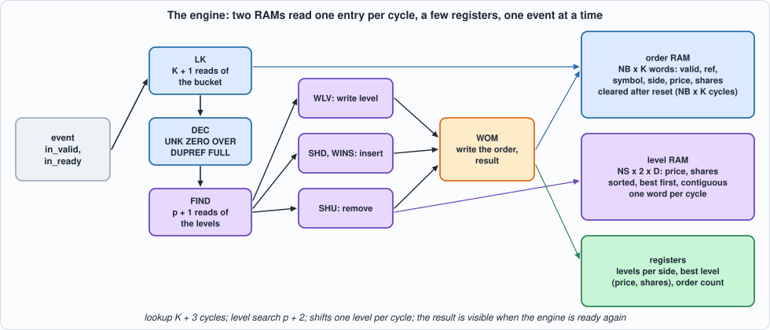
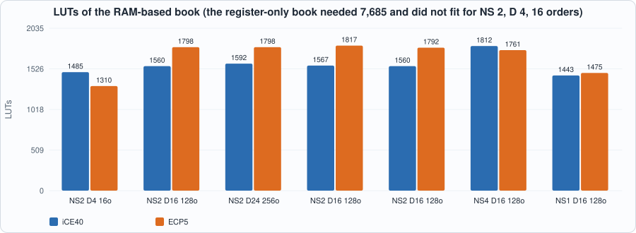
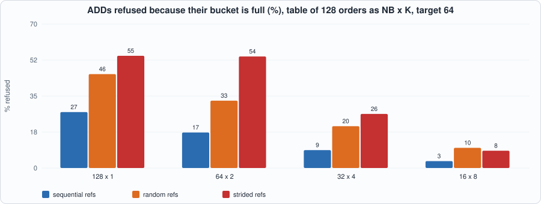
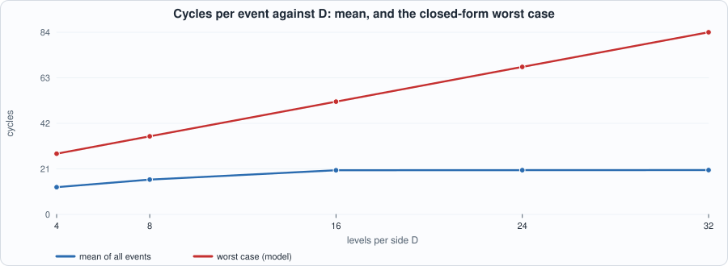

20. Order-Book Engineering: RAMs, a Hash Table, and What a Bounded Latency Costs¶
About the kestrels in this picture
- Lesser kestrel (Falco naumanni) breeds in colonies in Mediterranean Europe and Central Asia and migrates to Africa for the winter. It feeds largely on large insects and nests in cavities in old buildings and cliffs.
- Common kestrel (Falco tinnunculus) ranges across Europe, Asia and Africa. It is famous for hovering: it faces the wind and holds its head almost still while its body adjusts, searching the ground below before it drops onto prey. A much-cited study reported that voles' scent trails reflect ultraviolet light, which kestrels may be able to see.
The scene is imaginary and the birds are stylised drawings.
What you will see: Chapter 19's book was correct and far too big: registers for every order and every level. This chapter builds the same book out of two RAMs: the orders in a hash table (a bucket of K ways, read one way per cycle) and the price levels of each symbol and side in a sorted array in a RAM that is searched, shifted and rewritten one entry per cycle. The price is time: an event is no longer one cycle but K + 3 to a few tens of cycles, depending on the state of the book. The chapter makes that time part of the specification, checks it cycle for cycle against the model, finds the closed-form worst case, and measures what the hash table costs in refused orders.
What you need to know first: Chapter 19 (the specification with dictionaries, the results and the top of book), Chapter 15 (a closed loop with a model that records per-cycle stimulus) and Chapter 9 (block RAM: a read returns one cycle after its address).
What this chapter builds: rtl/book2.sv (book2 and the pin wrapper book2_syn), model/book2_gold.py (the specification, now with the hash and the cycle counts), tb/book2_tb.sv, tools/ch20_run.py, tools/ch20_example_a.py, tools/ch20_example_b.py, tools/mut_ch20.py, tools/make_figs_ch20.py.
Scope: what this chapter leaves out, on purpose
One event at a time: the engine accepts the next event only when the last has finished; a pipelined engine that overlaps events (and has to forward between consecutive events on the same level) is not built, and is where the order-of-magnitude speed-up would come from. A content-addressable memory (CAM) is not built; the hash table is the alternative. Capacity is fixed: a bucket that is full refuses the ADD (FULL), a side with D levels refuses a new level (LVL); nothing is evicted. The clearing of the order RAM after reset takes NB x K cycles and is part of the contract. 32-bit references, prices and shares, as in Chapter 19. No design here reaches 125 MHz (see Example A); the critical path is named but not fixed. This is a model of a design, not a product.
What changes in the specification¶
Everything in Chapter 19 stays (events, results, the order in which an ADD is checked, symbols reported, the top of book). Two things are added, both forced by the hardware, and the model says them:
- A bucket can be full when the table is not. The order table is
NBbuckets ofKways; a reference goes to bucketh(ref) = (ref ^ ref>>8 ^ ref>>16 ^ ref>>24) mod NB(NBa power of two), and an ADD whose bucket already holdsKorders is refused with FULL, whatever the rest of the table holds. The hash is part of the contract, because it decides which ADDs are refused. - Time. The model returns, with every event, the number of cycles from the cycle it is accepted to the cycle the engine accepts the next one (the result is visible in that cycle). With
p= the number of strictly better price levels (the index of the order's level, or of the place a new level goes) andc= the number of levels on the side:
| step | cycles |
|---|---|
| ADD with 0 shares | 1 |
| accept + lookup of the bucket (every other event) | K + 3 (accept 1, K + 1 reads, 1 decision) |
| the events that end at the decision: UNK, ZERO, OVER, DUPREF, FULL | exactly K + 3 |
| level search | p + 2 |
LVL (a new level, all D in use) |
ends after the search |
| an ADD to an existing level, or a reduction that leaves shares at its level | 1 + 1 (write the level, write the order) |
| an ADD of a new level at index p | (c - p + 1 if c > p, else 0) shifting down, + 1 + 1 |
| a reduction that empties the level at index p | (c - p - 1 + 1 if c - p - 1 > 0, else 0) shifting up, + 1 (write the order) |
| REPLACE | the deletion, then the ADD without the accept cycle (or ZERO at once if the new shares are 0) |
| after reset | not ready for NB x K cycles (the order RAM is cleared) |
#!/usr/bin/env python3
"""Chapter 20: the specification of the RAM-based order book. The FUNCTION is Chapter 19's (same events, same results, same top of book), with ONE change that the hardware forces and the model must state: the order table is a HASH TABLE of NB buckets of K ways, so an ADD is rejected with FULL when ITS BUCKET holds K orders, whatever the occupancy of the rest of the table. The hash is part of the contract: h(ref) = (ref ^ ref>>8 ^ ref>>16 ^ ref>>24) mod NB (NB a power of two).
The TIME is no longer one event per cycle: the order table and the price levels are RAMs read one entry per cycle, so an event takes a number of cycles that depends on the book's state. n(event) = cycles from the cycle it is accepted to the cycle the engine accepts the next one (the result is visible in that same cycle):
ADD with 0 shares ........................ 1
lookup (every other event) ............... K + 3 (accept 1, K + 1 reads of the bucket, 1 decision); the events that end at the decision (UNK, ZERO, OVER, DUPREF, FULL) cost exactly this
then the price level is searched from the best price down: p + 2 cycles, where p is the number of strictly better levels (the level's index, or the index at which a new one goes); an ADD that needs a new level when all D are in use ends here (LVL)
then ADD to an existing level or a reduction that leaves shares at the level: 1 (write the level) + 1 (write the order)
ADD of a new level at index p with c levels on the side: (c - p + 1 if c > p else 0) (shift the worse levels down) + 1 (write the level) + 1 (write the order)
reduction that empties the level at index p of c levels: (c - p if c - p > 1 else 0) (shift the worse levels up) + 1 (write the order)
REPLACE: the deletion (lookup + level search + level update + order write) and then the ADD of the new order WITHOUT the accept cycle (or, if the new shares are 0, ZERO at once).
After reset the order RAM is cleared, one entry per cycle: the engine is not ready for NB * K cycles.
Results, order of checks, symbol reported and the top of book are Chapter 19's; see model/book_gold.py."""
import os, random, sys
sys.path.insert(0, os.path.dirname(os.path.abspath(__file__)))
from book_gold import M, ADD, EXEC, CANCEL, DELETE, REPLACE, TN, OK, UNK, FULL, LVL, OVER, DUPREF, ZERO, RN, write_stim, expected_rows
def h(ref, nb): return (ref ^ (ref >> 8) ^ (ref >> 16) ^ (ref >> 24)) & (nb - 1)
def better(side, a, b): return a > b if side == 0 else a < b # a is a better price than b on this side (bid: higher)
class Book2:
def __init__(self, ns=2, d=4, nb=4, k=2):
assert nb & (nb - 1) == 0
self.ns, self.d, self.nb, self.k = ns, d, nb, k; self.orders = {}; self.lv = [[{}, {}] for _ in range(ns)]
def top(self, sym):
b, a = self.lv[sym]; bp = max(b) if b else 0; ap = min(a) if a else 0
return (bp, b.get(bp, 0), ap, a.get(ap, 0), len(b), len(a), len(self.orders))
def pos(self, sym, side, px): return sum(1 for q in self.lv[sym][side] if better(side, q, px))
def _bucket_full(self, ref): return sum(1 for r in self.orders if h(r, self.nb) == h(ref, self.nb)) >= self.k
def _add(self, ref, sym, side, px, sh):
"""-> (result, cycles after the accept cycle, 0 when sh = 0 and the event ends here)"""
if sh == 0: return ZERO, 0
c = self.k + 2
if ref in self.orders: return DUPREF, c
if self._bucket_full(ref): return FULL, c
L = self.lv[sym][side]; p = self.pos(sym, side, px); c += p + 2
if px in L: c += 2
else:
if len(L) >= self.d: return LVL, c
n = len(L); c += (n - p + 1 if n > p else 0) + 2
self.orders[ref] = [sym, side, px, sh]; L[px] = (L.get(px, 0) + sh) & M; return OK, c
def _take(self, ref, sh):
"""reduce the order; -> cycles of the level and order updates (after the lookup)"""
sym, side, px, osh = self.orders[ref]; L = self.lv[sym][side]; p = self.pos(sym, side, px); n = len(L); c = p + 2
L[px] = (L[px] - sh) & M
if L[px] == 0: del L[px]; c += (n - 1 - p + 1 if n - 1 - p > 0 else 0) + 1
else: c += 2
if sh == osh: del self.orders[ref]
else: self.orders[ref][3] = osh - sh
return c
def event(self, e):
"""-> (cycles, result, sym). e: dict(t, ref, ref2, sym, side, px, sh)."""
t = e["t"]; ref = e["ref"] & M; lk = self.k + 2
if t == ADD:
r, c = self._add(ref, e["sym"], e["side"], e["px"] & M, e["sh"] & M); return (1 if c == 0 else 1 + c), r, e["sym"]
if ref not in self.orders: return 1 + lk, UNK, 0
sym, side, px, osh = self.orders[ref]
if t in (EXEC, CANCEL):
sh = e["sh"] & M
if sh == 0: return 1 + lk, ZERO, sym
if sh > osh: return 1 + lk, OVER, sym
return 1 + lk + self._take(ref, sh), OK, sym
c = lk + self._take(ref, osh)
if t == DELETE: return 1 + c, OK, sym
r, c2 = self._add(e["ref2"] & M, sym, side, e["px"] & M, e["sh"] & M); return 1 + c + c2, r, sym # REPLACE
def run(events, ns=2, d=4, nb=4, k=2, gaps=None):
"""Closed loop: the i-th event is offered no earlier than cycle sum(gaps[:i + 1]), held on the pins until accepted; the engine is busy for NB * K cycles after reset (clearing the order RAM) and for n cycles after each event. -> dict(rows, lines, book, cycles, busy) with rows[c] = (ready, result visible this cycle or None), busy = the cycles each event took."""
b = Book2(ns, d, nb, k); n = len(events); arr = []; t = 0
for i in range(n): t += (gaps[i] if gaps else 0); arr.append(t)
qi = 0; t = 0; busy_until = nb * k; pend = None; rows = []; lines = []; took = []
while qi < n or pend or t < busy_until + 2:
offered = events[qi] if qi < n and arr[qi] <= t else None
ready = t >= busy_until; res_now = pend[0] if pend and pend[1] == t else None
if res_now is not None: res_now = (res_now[1], res_now[2]) + pend[2]
rows.append((1 if ready else 0, res_now)); lines.append(offered)
if pend and pend[1] == t: pend = None
if offered is not None and ready:
cy, r, s = b.event(offered); busy_until = t + cy; pend = ((None, r, s), t + cy, b.top(s)); qi += 1; took.append((offered["t"], r, cy))
t += 1
if t > 100 * (n + 4) * (nb * k + 40) + sum(gaps or [0]) + 100: break
return dict(rows=rows, lines=lines, book=b, cycles=t, took=took)
def worst_case(d, k):
"""The longest event the rules allow (a REPLACE), by enumeration of the structural cases rather than by search: the old order sits at index p1 of a side with n1 levels and its level empties (shifting n1 - 1 - p1 levels up) or does not; the new order then goes to the same side, now n2 levels, hitting an existing level, inserting a new level at index p2 (shifting n2 - p2 levels down) or, with the side full, being refused at the end of the search."""
lk = k + 2; best = 0
for n1 in range(1, d + 1):
for p1 in range(n1):
for emptied in (True, False):
a = 1 + lk + (p1 + 2) + (((n1 - 1 - p1 + 1) if n1 - 1 - p1 > 0 else 0) + 1 if emptied else 2); n2 = n1 - 1 if emptied else n1
for p2 in range(n2 + 1):
if p2 < n2: best = max(best, a + lk + p2 + 2 + 2) # hits the level at p2
if n2 < d: best = max(best, a + lk + p2 + 2 + ((n2 - p2 + 1) if n2 > p2 else 0) + 2) # inserts a level at p2
elif p2 == n2: best = max(best, a + lk + p2 + 2) # all D in use and a worse price: LVL
return best
def gen_events(rng, n, ns=2, d=4, nb=4, k=2, mid=1000, spread=6, faults=0.08, sh_max=300, p_add=0.40, p_red=0.20, p_del=0.18, collide=0.4):
"""Flow with faults, as in Chapter 19 (the oracle book runs alongside so that most events name live orders), with references chosen so that buckets fill: with probability `collide` a new reference is a multiple of NB (all in one bucket for small numbers)."""
book = Book2(ns, d, nb, k); out = []; nxt = 1
def newref():
nonlocal nxt
nxt += 1; return nxt * nb if rng.random() < collide else nxt
for _ in range(n):
live = list(book.orders); r = rng.random(); mid += rng.choice([0, 0, 0, 1, -1])
def px(side): return mid + (rng.randint(0, spread) if side else -rng.randint(0, spread))
if not live or r < p_add:
side = rng.randrange(2); e = dict(t=ADD, ref=newref(), sym=rng.randrange(ns), side=side, px=px(side), sh=rng.randint(1, sh_max))
if rng.random() < faults / 2: e["ref"] = rng.choice(live) if live else 99999
if rng.random() < faults / 2: e["sh"] = 0
else:
ref = rng.choice(live); o = book.orders[ref]
if r < p_add + p_red: e = dict(t=rng.choice([EXEC, CANCEL]), ref=ref, sh=rng.randint(1, o[3]) if rng.random() < .6 else rng.randint(1, max(1, o[3] - 1)))
elif r < p_add + p_red + p_del: e = dict(t=DELETE, ref=ref)
else: e = dict(t=REPLACE, ref=ref, ref2=newref(), px=px(o[1]), sh=rng.randint(1, sh_max))
if rng.random() < faults / 2: e["ref"] = 777777 + rng.randrange(5)
elif rng.random() < faults and e["t"] in (EXEC, CANCEL): e["sh"] = o[3] + rng.randint(1, 5)
elif rng.random() < faults / 2 and e["t"] in (EXEC, CANCEL): e["sh"] = 0
elif rng.random() < faults / 2 and e["t"] == REPLACE and len(live) > 1: e["ref2"] = rng.choice(live)
out.append(e); book.event(e)
return out
if __name__ == "__main__":
b = Book2(2, 3, 4, 2) # buckets: h(ref) = ref & 3 for small refs
assert b.event(dict(t=ADD, ref=4, sym=0, side=0, px=100, sh=50)) == (5 + 2 + 2, OK, 0) # K + 3 = 5 (accept and lookup), level search at p = 0: 2, new level with nothing to shift: write level, write order: 2
assert b.top(0) == (100, 50, 0, 0, 1, 0, 1)
assert b.event(dict(t=ADD, ref=8, sym=0, side=0, px=100, sh=25)) == (5 + 2 + 2, OK, 0) # the same price: an existing level, write level, write order
n, r, s = b.event(dict(t=ADD, ref=12, sym=0, side=0, px=100, sh=1)); assert r == FULL and n == 5 and b.top(0)[:2] == (100, 75), (n, r) # refs 4, 8, 12 share bucket 0 (K = 2): FULL with the table nearly empty
assert b.event(dict(t=ADD, ref=5, sym=0, side=0, px=101, sh=10)) == (5 + 2 + (1 - 0 + 1) + 2, OK, 0) # a better bid: search ends at index 0 (2 cycles), one level to shift down (2), write, write
assert b.top(0)[:2] == (101, 10) and b.top(0)[4] == 2
assert b.event(dict(t=ADD, ref=6, sym=0, side=0, px=90, sh=1)) == (5 + (2 + 2) + 0 + 2, OK, 0) # the worst bid: index 2 = the end of 2 levels: search 4 cycles, nothing to shift
assert b.event(dict(t=ADD, ref=7, sym=0, side=0, px=80, sh=1)) == (5 + (3 + 2), LVL, 0) # 3 levels in use, D = 3: the search ends at index 3 and the add is refused
assert b.event(dict(t=EXEC, ref=5, sh=10)) == (5 + (0 + 2) + (3 - 1 - 0 + 1) + 1, OK, 0) # the level at index 0 empties: 2 levels move up (3), write order
assert b.top(0)[:2] == (100, 75) and b.top(0)[4] == 2
assert b.event(dict(t=CANCEL, ref=4, sh=20)) == (5 + (0 + 2) + 2, OK, 0) and b.top(0)[:2] == (100, 55) # partial: level write, order write
assert b.event(dict(t=ADD, ref=9, sym=1, side=1, px=7, sh=0)) == (1, ZERO, 1) # zero shares: no lookup at all
assert b.event(dict(t=DELETE, ref=77)) == (5, UNK, 0) and b.event(dict(t=EXEC, ref=4, sh=0)) == (5, ZERO, 0) and b.event(dict(t=EXEC, ref=4, sh=999)) == (5, OVER, 0)
assert b.event(dict(t=ADD, ref=4, sym=0, side=1, px=105, sh=5)) == (5, DUPREF, 0) # a duplicate costs the lookup only
c = Book2(1, 2, 2, 1); c.event(dict(t=ADD, ref=1, sym=0, side=0, px=10, sh=5))
assert c.event(dict(t=REPLACE, ref=1, ref2=3, px=11, sh=7)) == ((1 + 3) + (0 + 2) + 1 + (3 + 2 + 2), OK, 0) # K = 1: delete = accept + lookup 3 + search 2 + (level empties, nothing to shift) 0 + write order 1; add = lookup 3 + search 2 + 2
c = Book2(1, 2, 2, 1); c.event(dict(t=ADD, ref=1, sym=0, side=0, px=10, sh=5)); c.event(dict(t=ADD, ref=2, sym=0, side=0, px=11, sh=5))
assert c.event(dict(t=REPLACE, ref=1, ref2=3, px=12, sh=7)) == ((1 + 3) + (1 + 2) + 0 + 1 + (3 + 2 + 2 + 2), OK, 0) # the old order is at index 1 (search 3); the new price is the best of one level (search 2, shift 2, write, write)
assert c.event(dict(t=REPLACE, ref=2, ref2=5, px=1, sh=0)) == (1 + 3 + (1 + 2) + 1 + 0, ZERO, 0) and c.top(0)[6] == 1 and 2 not in c.orders # zero new shares: the old order is gone, no lookup of the new one
assert h(4, 4) == 0 and h(0x104, 4) == 1 and h(0x10004, 4) == 1 and h(0x1000004, 4) == 1 and h(0x101, 4) == 0 # (ref ^ ref>>8 ^ ref>>16 ^ ref>>24) & 3, worked by hand: 0x104 ^ 0x1 = 0x105; 0x101 ^ 0x1 = 0x100
for r in (0x104, 0x10004, 0x1000004): # with NB = 4, K = 1: 4 and r are in different buckets only because a higher byte is in the hash
h4 = Book2(1, 2, 4, 1); h4.event(dict(t=ADD, ref=4, sym=0, side=0, px=50, sh=1)); assert h4.event(dict(t=ADD, ref=r, sym=0, side=0, px=50, sh=1))[1] == OK, r
assert h4.event(dict(t=ADD, ref=0x101, sym=0, side=0, px=50, sh=1))[1] == FULL # bucket 0 holds ref 4
s2 = Book2(2, 2, 2, 1); s2.event(dict(t=ADD, ref=2, sym=1, side=0, px=5, sh=1)); assert h(2, 2) == 0 and s2.event(dict(t=ADD, ref=4, sym=0, side=0, px=5, sh=1))[1] == FULL # a bucket is full whatever the symbols
assert worst_case(2, 2) == 20 and worst_case(1, 1) == 15 # D = 2, K = 2: REPLACE of the order at the best of 2 levels (accept 1 + lookup 4 + search 2 + shift 1 level up 2 + write 1 = 10) by a new best price on the 1 remaining level (lookup 4 + search 2 + shift 2 + write level and order 2 = 10)
r = run([dict(t=ADD, ref=1, sym=0, side=0, px=5, sh=1), dict(t=ADD, ref=2, sym=0, side=0, px=5, sh=0)], 1, 2, 2, 2) # after reset the order RAM is cleared for NB * K = 4 cycles
assert [x[0] for x in r["rows"][:5]] == [0, 0, 0, 0, 1] and r["took"] == [(ADD, OK, 9), (ADD, ZERO, 1)] # the first event is accepted in cycle 4 and takes 9: ready again in cycle 13 with its result; the second takes 1
assert [x[0] for x in r["rows"][4:15]] == [1, 0, 0, 0, 0, 0, 0, 0, 0, 1, 1] and r["rows"][13][1][:2] == (OK, 0) and r["rows"][14][1][:2] == (ZERO, 0)
print("book2_gold hand-checked scenarios passed")
The hand-checked scenarios at the end of the file are worked out by hand from the table (for example, D = 2, K = 2: a REPLACE of the order at the best of 2 levels is 10 cycles for the deletion and 10 for the addition, 20; D = 1, K = 1 gives 15). They are what checks the model; the RTL is then checked against the model.
The hardware¶

Figure 20.1: the states of the engine and the RAMs they use.Two RAMs with one write port and one registered read port each: the order RAM (NB x K words of valid, reference, symbol, side, price, shares) and the level RAM (NS x 2 x D words of price and shares). Because the read data arrives one cycle after the address, every loop is a small pipeline: an address is issued each cycle and the data of the previous one is consumed. The states:
- INIT: write zero to every order word, one per cycle. The level RAM needs no clearing, because the number of levels of each side (a register) says which words are valid.
- IDLE → LK → DEC: read the
Kways of the bucket while recording which way holds the reference (and its fields) and a free way; then decide: DUPREF, FULL, UNK, ZERO, OVER, or go on. - FIND: read the levels from the best down until the price is found (a hit), or a worse price (insert here), or the end; the decision is made
p + 1cycles after the first read. - WLV: write a level (an addition to it, or a reduction that leaves shares). SHD + WINS: shift the worse levels down one place per cycle and write the new level. SHU: shift the worse levels up over a level that has emptied. WOM: write the order word (new, reduced or cleared), report the result, and, for a REPLACE, start the second phase.
- The number of levels of each side, the best level of each side and the number of orders are registers, updated as the levels change, so the top of book is read in the cycle the result is visible with no RAM access.
// Chapter 20: the order book with RAMs. The order table is a hash table (NB buckets of K ways, a RAM read one way per cycle); the price levels of each (symbol, side) are a sorted array of D entries in a RAM, searched, shifted and rewritten one entry per cycle; the best level and the number of levels of each side stay in registers. One event at a time; the timing is specified in model/book2_gold.py.
module book2 #(parameter int NS = 2, parameter int D = 8, parameter int NB = 8, parameter int K = 4) (
input logic clk, input logic rst,
input logic in_valid, input logic [2:0] in_type, input logic [31:0] in_ref, input logic [31:0] in_ref2, input logic [((NS > 1) ? $clog2(NS) : 1) - 1:0] in_sym, input logic in_side, input logic [31:0] in_px, input logic [31:0] in_sh,
output logic in_ready,
output logic o_valid, output logic [2:0] o_res, output logic [((NS > 1) ? $clog2(NS) : 1) - 1:0] o_sym, output logic [31:0] o_bpx, output logic [31:0] o_bsh, output logic [31:0] o_apx, output logic [31:0] o_ash,
output logic [7:0] o_bn, output logic [7:0] o_an, output logic [15:0] o_nord);
localparam int SW = (NS > 1) ? $clog2(NS) : 1, NL = NS * 2, NOW = NB * K, OA = (NOW > 1) ? $clog2(NOW) : 1, LA = ((NL * D) > 1) ? $clog2(NL * D) : 1, DW = $clog2(D + 2) + 1, KW = $clog2(K + 2) + 1, BW = (NB > 1) ? $clog2(NB) : 1, OW = 1 + 32 + SW + 1 + 32 + 32;
typedef enum logic [3:0] {S_INIT, S_IDLE, S_LK, S_DEC, S_FIND, S_WLV, S_SHD, S_SHU, S_WINS, S_WOM} st_t;
st_t st;
// ---- the two RAMs (one write port, one read port each; the read data is registered)
logic [OW-1:0] om [0:NOW-1]; logic [OW-1:0] om_rd; logic [OA-1:0] om_ra, om_wa; logic om_we; logic [OW-1:0] om_wd;
logic [63:0] lm [0:NL * D - 1]; logic [63:0] lm_rd; logic [LA-1:0] lm_ra, lm_wa; logic lm_we; logic [63:0] lm_wd;
always_ff @(posedge clk) begin if (om_we) om[om_wa] <= om_wd; om_rd <= om[om_ra]; end
always_ff @(posedge clk) begin if (lm_we) lm[lm_wa] <= lm_wd; lm_rd <= lm[lm_ra]; end
// ---- registers: per (symbol, side) the number of levels and the best level; the number of orders
logic [DW-1:0] cnt [0:NL-1]; logic [31:0] tpx [0:NL-1]; logic [31:0] tsh [0:NL-1]; logic [15:0] nord;
// ---- the event being processed
logic [2:0] r_t; logic [31:0] r_ref, r_ref2, r_px, r_sh; logic [SW-1:0] r_sym; logic r_side;
logic [OA-1:0] bkt; logic [KW-1:0] lk_i, fw, ff; logic fv, fvv; logic [SW-1:0] f_sym; logic f_side; logic [31:0] f_px, f_sh, tk;
logic [OA-1:0] ini;
logic [DW-1:0] fi, p, srem, sj, sdst; logic fst, sw; logic [31:0] wsh;
// result register
logic res_v; logic [2:0] res; logic [SW-1:0] res_sym;
// the hash: the low bits of the 4 bytes of the reference XORed together; the bucket's first way is h * K
wire [BW-1:0] hx_in = BW'(in_ref ^ (in_ref >> 8) ^ (in_ref >> 16) ^ (in_ref >> 24)), hx_2 = BW'(r_ref2 ^ (r_ref2 >> 8) ^ (r_ref2 >> 16) ^ (r_ref2 >> 24));
wire [OA-1:0] hb_in = OA'(hx_in) * OA'(K), hb_2 = OA'(hx_2) * OA'(K);
logic [SW:0] lidx; logic [LA-1:0] lbase;
always_comb begin
if (r_t == 3'(0)) lidx = {r_sym, r_side}; else lidx = {f_sym, f_side};
lbase = LA'(lidx) * LA'(D);
end
logic [DW-1:0] cnt_l; assign cnt_l = cnt[lidx];
// fields of the word the order RAM returns
wire w_v = om_rd[OW-1]; wire [31:0] w_ref = om_rd[OW-2 -: 32]; wire [SW-1:0] w_sym = om_rd[OW-2-32 -: SW]; wire w_side = om_rd[OW-2-32-SW]; wire [31:0] w_px = om_rd[63:32]; wire [31:0] w_sh = om_rd[31:0];
wire [31:0] l_px = lm_rd[63:32]; wire [31:0] l_sh = lm_rd[31:0];
wire is_red = (r_t == 3'(1)) || (r_t == 3'(2));
wire l_better = r_side ? (r_px < l_px) : (r_px > l_px); // the new price is better than the level's (ADD only)
wire [31:0] tgt = (r_t == 3'(0)) ? r_px : f_px; // the price of the level the event works on
assign in_ready = (st == S_IDLE);
// RAM control: addresses and write data are functions of the state (the read data arrives, registered, one cycle after its address)
always_comb begin
om_ra = bkt + OA'(lk_i); om_we = 1'b0; om_wa = '0; om_wd = '0;
lm_ra = lbase + LA'(sj); lm_we = 1'b0; lm_wa = '0; lm_wd = '0;
if (st == S_FIND) lm_ra = lbase + (fst ? '0 : LA'(fi) + 1'b1);
if (st == S_INIT) begin om_we = 1'b1; om_wa = ini; end
if (st == S_WOM) begin
om_we = 1'b1;
if (r_t == 3'(0)) begin om_wa = bkt + OA'(ff); om_wd = {1'b1, r_ref, r_sym, r_side, r_px, r_sh}; end
else begin om_wa = bkt + OA'(fw); if (tk == f_sh) om_wd = '0; else om_wd = {1'b1, r_ref, f_sym, f_side, f_px, f_sh - tk}; end
end
if (st == S_WLV) begin lm_we = 1'b1; lm_wa = lbase + LA'(p); lm_wd = {tgt, wsh}; end
if (st == S_WINS) begin lm_we = 1'b1; lm_wa = lbase + LA'(p); lm_wd = {r_px, r_sh}; end
if ((st == S_SHD || st == S_SHU) && sw) begin lm_we = 1'b1; lm_wa = lbase + LA'(sdst); lm_wd = lm_rd; end
end
integer i;
always_ff @(posedge clk) begin
res_v <= 1'b0;
if (rst) begin
st <= S_INIT; ini <= '0; nord <= '0;
for (i = 0; i < NL; i++) cnt[i] <= '0; // tpx and tsh need no reset: they are shown only when cnt is not 0, and written before it becomes so
end else case (st)
S_INIT: begin ini <= ini + 1'b1; if (ini == OA'(NOW - 1)) st <= S_IDLE; end
S_IDLE: if (in_valid) begin
r_t <= in_type; r_ref <= in_ref; r_ref2 <= in_ref2; r_sym <= in_sym; r_side <= in_side; r_px <= in_px; r_sh <= in_sh;
if (in_type == 3'(0) && in_sh == 32'd0) begin res_v <= 1'b1; res <= 3'd6; res_sym <= in_sym; end
else begin st <= S_LK; lk_i <= '0; fv <= 1'b0; fvv <= 1'b0; bkt <= hb_in; end
end
S_LK: begin
if (lk_i != 0) begin
// refs are unique in the table (a duplicate ADD is refused), so at most one way matches
if (w_v && w_ref == r_ref) begin fv <= 1'b1; fw <= lk_i - 1'b1; f_sym <= w_sym; f_side <= w_side; f_px <= w_px; f_sh <= w_sh; end
// any free way will do (the model does not say which): the last one seen
if (!w_v) begin fvv <= 1'b1; ff <= lk_i - 1'b1; end
end
lk_i <= lk_i + 1'b1; if (lk_i == KW'(K)) st <= S_DEC;
end
S_DEC: begin
fst <= 1'b1; fi <= '0;
if (r_t == 3'(0)) begin
if (fv) begin res_v <= 1'b1; res <= 3'd5; res_sym <= r_sym; st <= S_IDLE; end
else if (!fvv) begin res_v <= 1'b1; res <= 3'd2; res_sym <= r_sym; st <= S_IDLE; end
else st <= S_FIND;
end else begin
if (!fv) begin res_v <= 1'b1; res <= 3'd1; res_sym <= '0; st <= S_IDLE; end
else if (is_red && r_sh == 32'd0) begin res_v <= 1'b1; res <= 3'd6; res_sym <= f_sym; st <= S_IDLE; end
else if (is_red && r_sh > f_sh) begin res_v <= 1'b1; res <= 3'd4; res_sym <= f_sym; st <= S_IDLE; end
else begin tk <= is_red ? r_sh : f_sh; st <= S_FIND; end
end
end
S_FIND: begin
if (fst) fst <= 1'b0;
else if (fi == cnt_l && r_t == 3'(0)) begin // all the levels are better: insert at the end
p <= fi;
if (cnt_l == DW'(D)) begin res_v <= 1'b1; res <= 3'd3; res_sym <= r_sym; st <= S_IDLE; end
else begin srem <= '0; st <= S_WINS; end
end else if (l_px == tgt) begin
p <= fi;
if (r_t == 3'(0)) begin wsh <= l_sh + r_sh; st <= S_WLV; end
else if (l_sh != tk) begin wsh <= l_sh - tk; st <= S_WLV; end
else begin
cnt[lidx] <= cnt_l - 1'b1; srem <= cnt_l - 1'b1 - fi; sj <= fi + 1'b1; sw <= 1'b0;
st <= (cnt_l - 1'b1 - fi > 0) ? S_SHU : S_WOM;
end
end else if (r_t == 3'(0) && l_better) begin
p <= fi;
if (cnt_l == DW'(D)) begin res_v <= 1'b1; res <= 3'd3; res_sym <= r_sym; st <= S_IDLE; end
else begin srem <= cnt_l - fi; sj <= cnt_l - 1'b1; sw <= 1'b0; st <= (cnt_l > fi) ? S_SHD : S_WINS; end
end else fi <= fi + 1'b1;
end
S_WLV: begin if (p == 0) tsh[lidx] <= wsh; st <= S_WOM; end
S_SHD: begin
if (srem != 0) begin sw <= 1'b1; sdst <= sj + 1'b1; sj <= sj - 1'b1; srem <= srem - 1'b1; end
else begin sw <= 1'b0; st <= S_WINS; end
end
S_SHU: begin
if (sw && sdst == 0) begin tpx[lidx] <= l_px; tsh[lidx] <= l_sh; end
if (srem != 0) begin sw <= 1'b1; sdst <= sj - 1'b1; sj <= sj + 1'b1; srem <= srem - 1'b1; end
else begin sw <= 1'b0; st <= S_WOM; end
end
S_WINS: begin
cnt[lidx] <= cnt_l + 1'b1; if (p == 0) begin tpx[lidx] <= r_px; tsh[lidx] <= r_sh; end st <= S_WOM;
end
S_WOM: begin
if (r_t == 3'(0)) begin nord <= nord + 1'b1; res_v <= 1'b1; res <= 3'd0; res_sym <= r_sym; st <= S_IDLE; end
else begin
if (tk == f_sh) nord <= nord - 1'b1;
if (r_t == 3'(4)) begin // REPLACE: now add the new order, with the old order's symbol and side
r_t <= 3'(0); r_ref <= r_ref2; r_sym <= f_sym; r_side <= f_side;
if (r_sh == 32'd0) begin res_v <= 1'b1; res <= 3'd6; res_sym <= f_sym; st <= S_IDLE; end
else begin st <= S_LK; lk_i <= '0; fv <= 1'b0; fvv <= 1'b0; bkt <= hb_2; end
end else begin res_v <= 1'b1; res <= 3'd0; res_sym <= f_sym; st <= S_IDLE; end
end
end
default: st <= S_IDLE;
endcase
end
// the top of book of the symbol of the result, read in the cycle the result is visible
assign o_valid = res_v; assign o_res = res; assign o_sym = res_sym;
always_comb begin
o_bpx = (cnt[{o_sym, 1'b0}] != 0) ? tpx[{o_sym, 1'b0}] : 32'd0; o_bsh = (cnt[{o_sym, 1'b0}] != 0) ? tsh[{o_sym, 1'b0}] : 32'd0;
o_apx = (cnt[{o_sym, 1'b1}] != 0) ? tpx[{o_sym, 1'b1}] : 32'd0; o_ash = (cnt[{o_sym, 1'b1}] != 0) ? tsh[{o_sym, 1'b1}] : 32'd0;
o_bn = 8'(cnt[{o_sym, 1'b0}]); o_an = 8'(cnt[{o_sym, 1'b1}]); o_nord = nord;
end
endmodule
// book2_syn: the same design behind a handful of pins, ONLY so that it fits a chip for the place-and-route runs: the event (140 bits) is shifted in serially, the outputs are registered and folded into one 16-bit word.
module book2_syn #(parameter int NS = 2, parameter int D = 8, parameter int NB = 8, parameter int K = 4) (input logic clk, input logic rst, input logic si, input logic sh, output logic [15:0] info);
localparam int SW = (NS > 1) ? $clog2(NS) : 1;
logic [139:0] iv; logic ready, ov_; logic [2:0] res; logic [SW-1:0] sy; logic [31:0] bpx, bsh, apx, ash; logic [7:0] bn, an; logic [15:0] nord;
always_ff @(posedge clk) if (sh) iv <= {iv[138:0], si};
book2 #(.NS(NS), .D(D), .NB(NB), .K(K)) u (.clk(clk), .rst(rst), .in_valid(iv[139]), .in_type(iv[138:136]), .in_ref(iv[135:104]), .in_ref2(iv[103:72]), .in_sym(iv[71:71-SW+1]), .in_side(iv[0]), .in_px(iv[71:40]), .in_sh(iv[39:8]), .in_ready(ready),
.o_valid(ov_), .o_res(res), .o_sym(sy), .o_bpx(bpx), .o_bsh(bsh), .o_apx(apx), .o_ash(ash), .o_bn(bn), .o_an(an), .o_nord(nord));
logic [15:0] x, r1; always_comb x = bpx[15:0] ^ bpx[31:16] ^ bsh[15:0] ^ bsh[31:16] ^ apx[15:0] ^ apx[31:16] ^ ash[15:0] ^ ash[31:16] ^ {bn, an} ^ nord ^ {8'(0), ov_, ready, res, 3'(sy)};
always_ff @(posedge clk) begin r1 <= x; info <= r1; end
endmodule
Two details are worth reading. The RAM address and write data are combinational functions of the state (the always_comb block), because a registered write enable would write a cycle late; and the shifts read one entry while writing the previous one to a different address, which a one-write-port RAM allows. Two simplifications came from the mutation run below: the free way chosen is simply the last one seen (the model does not say which), and a match needs no "first match" flag (references are unique in the table).
The tests¶
// Chapter 20 testbench for book2: line k of out/book2_stim.hex is the event OFFERED in cycle k: valid(1) type(1) sym(1) side(1) ref(8) ref2(8) px(8) sh(8) hex digits (junk where valid = 0); the offer is held on the pins whether or not the engine is ready: model/book_gold.py run() decides which cycle's offer is accepted. Before every clock edge it prints
// C <cycle> <in_ready> <o_valid> <result> <symbol> <best bid px> <bid sh> <best ask px> <ask sh> <bid levels> <ask levels> <orders>
// (zeros when o_valid = 0): the result registered at the previous edge and the top of book of its symbol read from the level registers now.
`timescale 1ns/1ps
`ifndef NC
`define NC 1000
`endif
`ifndef NS
`define NS 2
`endif
`ifndef D
`define D 4
`endif
`ifndef NB
`define NB 4
`endif
`ifndef K
`define K 2
`endif
module book2_tb;
localparam int NC = `NC, SW = (`NS > 1) ? $clog2(`NS) : 1;
logic clk = 0, rst = 1, in_valid = 0, in_side = 0; logic [2:0] in_type = '0; logic [31:0] in_ref = '0, in_ref2 = '0, in_px = '0, in_sh = '0; logic [SW-1:0] in_sym = '0; logic [143:0] vec [0:NC-1]; int k, cyc = 0; logic run = 0;
logic in_ready, o_valid; logic [2:0] o_res; logic [SW-1:0] o_sym; logic [31:0] o_bpx, o_bsh, o_apx, o_ash; logic [7:0] o_bn, o_an; logic [15:0] o_nord;
book2 #(.NS(`NS), .D(`D), .NB(`NB), .K(`K)) dut (.clk(clk), .rst(rst), .in_valid(in_valid), .in_type(in_type), .in_ref(in_ref), .in_ref2(in_ref2), .in_sym(in_sym), .in_side(in_side), .in_px(in_px), .in_sh(in_sh), .in_ready(in_ready),
.o_valid(o_valid), .o_res(o_res), .o_sym(o_sym), .o_bpx(o_bpx), .o_bsh(o_bsh), .o_apx(o_apx), .o_ash(o_ash), .o_bn(o_bn), .o_an(o_an), .o_nord(o_nord));
always #4 clk = ~clk;
`ifdef GARBAGE
initial begin // Icarus only: the registers and both RAMs power up with garbage, so that a reset or a clearing sweep that forgets something is seen
dut.nord = 16'd7; for (int i = 0; i < `NB * `K; i++) dut.om[i] = '1; for (int i = 0; i < `NS * 2 * `D; i++) dut.lm[i] = 64'h0000004d00000003;
for (int s = 0; s < `NS * 2; s++) begin dut.cnt[s] = 3; dut.tpx[s] = 32'd77; dut.tsh[s] = 32'd5; end
end
`endif
always @(posedge clk) if (run) begin
$display("C %0d %0d %0d %0d %0d %0d %0d %0d %0d %0d %0d %0d", cyc, in_ready, o_valid, o_valid ? o_res : 3'd0, o_valid ? o_sym : '0, o_valid ? o_bpx : 32'd0, o_valid ? o_bsh : 32'd0, o_valid ? o_apx : 32'd0, o_valid ? o_ash : 32'd0, o_valid ? o_bn : 8'd0, o_valid ? o_an : 8'd0, o_valid ? o_nord : 16'd0);
cyc++;
end
initial begin
$readmemh("out/book2_stim.hex", vec);
repeat (3) @(negedge clk); rst = 0;
for (k = 0; k < NC; k++) begin
in_valid = vec[k][140]; in_type = vec[k][138:136]; in_sym = vec[k][132 +: SW]; in_side = vec[k][128]; in_ref = vec[k][127:96]; in_ref2 = vec[k][95:64]; in_px = vec[k][63:32]; in_sh = vec[k][31:0]; run = 1; @(negedge clk);
end
in_valid = 0; repeat (3) @(negedge clk); $finish;
end
endmodule
#!/usr/bin/env python3
"""Chapter 20: the running designs. (1) lint; (2) the model: hand-checked scenarios and the statistics of the stimulus; (3) the book against the cycle model, every result, the top of book of its symbol and the readiness of the engine in every cycle, in two simulators, for five sizes (symbols, levels, orders), on realistic flow with faults and on RANDOM events (which reach the cases the realistic flow does not)."""
import os, random, subprocess, sys
from collections import Counter
sys.path.insert(0, os.path.dirname(os.path.abspath(__file__))); sys.path.insert(0, os.path.join(os.path.dirname(os.path.abspath(__file__)), "..", "model"))
import flow, book2_gold as G
R = flow.ROOT; F = ["rtl/book2.sv", "tb/book2_tb.sv"]
def rows_rtl(res, ns, d, nb, k, simu="icarus", rtl=F):
n = G.write_stim(os.path.join(R, "out", "book2_stim.hex"), res["lines"])
o = (flow.sim_icarus if simu == "icarus" else flow.sim_verilator)(rtl, "book2_tb", defines=(f"NC={n}", f"NS={ns}", f"D={d}", f"NB={nb}", f"K={k}") + (("GARBAGE",) if simu == "icarus" else ()))[1]
try: return [tuple(int(x) for x in l.split()[1:]) for l in o.splitlines() if l.startswith("C ")]
except ValueError: return [("x",)]
def same(res, ns, d, nb, k, simu="icarus", rtl=F):
got = rows_rtl(res, ns, d, nb, k, simu, rtl); exp = G.expected_rows(res); return got[:len(exp)] == exp and len(got) >= len(exp)
def random_events(rng, n, ns, d, nb, k):
"""Uniformly random events over a small space of references, symbols and prices: unknown and duplicate references, all the results, full tables and levels, every phase."""
out = []
for _ in range(n):
t = rng.randrange(5); e = dict(t=t, ref=rng.randint(0, nb * k + 3), ref2=rng.randint(0, nb * k + 3), sym=rng.randrange(ns), side=rng.randrange(2), px=rng.randint(1, d + 3), sh=rng.choice([0, 1, 2, 5, 10, 1 << 20]) if rng.random() < .1 else rng.randint(1, 8))
out.append(e)
return out
CONFIGS = [(2, 4, 4, 2), (1, 2, 2, 2), (3, 3, 4, 1), (4, 8, 8, 4), (2, 1, 2, 3)]
def widen(ev):
"""The same events with every reference mapped through a bijection of 32 bits (so that all four bytes of a reference are used by the hash and by the comparison)."""
f = lambda r: (r * 2654435761 + 0x5BD1E995) & G.M
return [{**e, "ref": f(e["ref"]), "ref2": f(e["ref2"])} if "ref2" in e else ({**e, "ref": f(e["ref"])} if "ref" in e else e) for e in ev]
def near_miss(nb, k):
"""References that differ in one bit from a live one: bit b of the reference changes bit b mod 8 of the hash, so with NB below 2^(b mod 8) it stays in the SAME bucket, where the comparison (all 32 bits) must tell them apart. For every bit: ADD r, ADD r with bit b flipped (must be OK, not DUPREF), EXEC the flipped one (must find it), DELETE the first; also reference 0 (the value an empty entry holds)."""
ev = []; base = 0x13579BDF
for b in range(32):
r1 = base ^ (b * 0x01010101 & G.M); r2 = r1 ^ (1 << b)
ev += [dict(t=G.ADD, ref=r1, sym=0, side=0, px=100 + b, sh=7), dict(t=G.ADD, ref=r2, sym=0, side=1, px=200 + b, sh=3), dict(t=G.EXEC, ref=r2, sh=1), dict(t=G.DELETE, ref=r1), dict(t=G.DELETE, ref=r2)]
ev += [dict(t=G.EXEC, ref=0, sh=1), dict(t=G.ADD, ref=0, sym=0, side=0, px=5, sh=2), dict(t=G.EXEC, ref=0, sh=1), dict(t=G.DELETE, ref=0), dict(t=G.EXEC, ref=0, sh=1), dict(t=G.DELETE, ref=0)]
return ev
def make(kind, seed, n, ns, d, nb, k):
rng = random.Random(seed)
if kind == "near": ev = near_miss(nb, k)
elif kind == "wide": ev = widen(G.gen_events(rng, n, ns, d, nb, k, spread=d + 1, faults=0.1))
else: ev = G.gen_events(rng, n, ns, d, nb, k, spread=d + 1, faults=0.1) if kind == "flow" else random_events(rng, n, ns, d, nb, k)
return G.run(ev, ns, d, nb, k, gaps=[rng.choice([0, 0, 0, 1, 4]) for _ in ev]), ev
def battery():
"""The mutation runs' test: five sizes, flow with faults and random events, Icarus. -> None or the first difference."""
for ci, (ns, d, nb, k) in enumerate(CONFIGS):
for kind in ("flow", "random", "wide", "near"):
for seed in range(1 if kind == "near" else 2):
try: res, _ = make(kind, seed + ci, 150, ns, d, nb, k); ok = same(res, ns, d, nb, k)
except Exception as x: return f"crash {type(x).__name__}"
if not ok: return f"{kind}, NS {ns}, D {d}, NB {nb}, K {k}"
return None
def battery_model():
"""The model's own test: its hand-checked scenarios. -> None or a description."""
q = subprocess.run([sys.executable, "model/book2_gold.py"], cwd=R, capture_output=True, text=True, timeout=300)
return None if q.returncode == 0 else "hand-checked scenarios"
def adversarial(d, k):
"""The two longest events the rules allow, built: one symbol, bid levels of one order each. (A) d levels; the order at the best level is REPLACEd by one at a price better than all (the deletion shifts d - 1 levels up, the addition d - 1 levels down). (B) the worst level holds two orders and one of them is REPLACEd at the same price (a search to the end of the levels twice, no shifts). -> ([events of A, events of B], nb)"""
nb = 1
while nb < d + 5: nb *= 2
base = [dict(t=G.ADD, ref=i + 1, sym=0, side=0, px=10 + i, sh=5) for i in range(d)] # level i holds ref i + 1; the best (highest) is the last
A = base + [dict(t=G.REPLACE, ref=d, ref2=d + 1, px=10 + d + 5, sh=5)]
B = base + [dict(t=G.ADD, ref=d + 2, sym=0, side=0, px=10, sh=5), dict(t=G.REPLACE, ref=d + 2, ref2=d + 3, px=10, sh=5)]
return [A, B], nb
def latency_rows():
"""-> list of (d, k, longest event in the model by search, the closed form, the adversarial event's cycles, RTL equal)."""
out = []
for d, k in ((1, 1), (2, 2), (4, 4), (8, 4), (8, 1)):
evs, nb = adversarial(d, k); ress = [G.run(ev, 1, d, nb, k) for ev in evs]; n_adv = max(r["took"][-1][2] for r in ress)
rng = random.Random(d * 10 + k); worst = 0
for seed in range(30):
e2 = G.gen_events(rng, 200, 1, d, nb, k, spread=d + 1, faults=0.1, collide=0.1); worst = max(worst, max(c for _, _, c in G.run(e2, 1, d, nb, k)["took"]))
out.append((d, k, worst, G.worst_case(d, k), n_adv, all(same(r, 1, d, nb, k) for r in ress)))
return out
if __name__ == "__main__":
if "--battery-model" in sys.argv: print("RESULT", battery_model()); sys.exit(0)
if "--battery" in sys.argv: print("RESULT", battery()); sys.exit(0)
print("== 1. lint gate (Verilator -Wall --lint-only, Yosys 'check')")
p = subprocess.run(["verilator", "--lint-only", "-Wall", "--top-module", "book2", "rtl/book2.sv"], cwd=R, capture_output=True, text=True); w = [l for l in (p.stdout + p.stderr).splitlines() if l.startswith("%Warning") and "DECLFILENAME" not in l]
y = subprocess.run(["yosys", "-p", "read_verilog -sv rtl/book2.sv; hierarchy -top book2; proc; opt_clean; check"], cwd=R, capture_output=True, text=True).stdout
print(f" book2: Verilator warnings {len(w)}, Yosys check problems {len([l for l in y.splitlines() if 'Found and reported' in l and ' 0 problems' not in l])}")
print("\n== 2. the model (python3 model/book2_gold.py) and what the stimulus contains (8 seeds of 300 events, NS 2, D 4, NB 4, K 2)")
print(" " + subprocess.run([sys.executable, "model/book2_gold.py"], cwd=R, capture_output=True, text=True).stdout.strip())
for kind in ("flow", "random", "wide", "near"):
c = Counter(); t = Counter()
for seed in range(8):
res, ev = make(kind, seed, 300, 2, 4, 4, 2)
for r in res["rows"]:
if r[1]: c[G.RN[r[1][0]]] += 1
for e in ev: t[G.TN[e["t"]]] += 1
print(f" {kind:7s} events: " + ", ".join(f"{k} {v}" for k, v in sorted(t.items())) + " | results: " + ", ".join(f"{k} {v}" for k, v in sorted(c.items(), key=lambda kv: G.RN.index(kv[0]))))
print("\n== 3. the book against the cycle model: every result with the top of book of its symbol, and `ready`, in every cycle; 4 seeds of 300 events per row")
print(f" {'events':7s} {'NS':>2s} {'D':>2s} {'NB':>2s} {'K':>2s} | {'cycles':>7s} {'results':>8s} {'OK':>5s} {'rejected':>9s} | {'Icarus':>9s} {'Verilator':>10s}")
for kind in ("flow", "random", "wide", "near"):
for ns, d, nb, k in CONFIGS:
ok = 0; cyc = nres = nok = 0; v = "-"
for seed in range(4):
res, ev = make(kind, seed, 300, ns, d, nb, k); ok += same(res, ns, d, nb, k); cyc += res["cycles"]
for r in res["rows"]:
if r[1]: nres += 1; nok += r[1][0] == G.OK
if seed == 0: v = "PASS" if same(res, ns, d, nb, k, "verilator") else "FAIL"
print(f" {kind:7s} {ns:2d} {d:2d} {nb:2d} {k:2d} | {cyc:7d} {nres:8d} {nok:5d} {nres - nok:9d} | {ok:6d} of 4 {v:>10s}")
print("\n== 4. the longest event: the closed form of the model, the longest event seen in 30 x 200 random events of flow, and the longer of the two constructed events (see `adversarial`), which the RTL also executes cycle for cycle")
print(f" {'D':>2s} {'K':>2s} | {'closed form':>11s} {'constructed':>11s} {'random flow, longest':>20s} | RTL = model")
for d, k, worst, cf, adv, ok in latency_rows(): print(f" {d:2d} {k:2d} | {cf:11d} {adv:11d} {worst:20d} | {'PASS' if ok else 'FAIL'}" + ("" if adv == cf and worst <= cf else " <-- MISMATCH"))
To run: python3 tools/ch20_run.py (several minutes). Recorded output:
== 1. lint gate (Verilator -Wall --lint-only, Yosys 'check')
book2: Verilator warnings 0, Yosys check problems 0
== 2. the model (python3 model/book2_gold.py) and what the stimulus contains (8 seeds of 300 events, NS 2, D 4, NB 4, K 2)
book2_gold hand-checked scenarios passed
flow events: ADD 979, CANCEL 265, DELETE 404, EXEC 226, REPLACE 526 | results: OK 1709, UNK 69, FULL 424, LVL 8, OVER 51, DUPREF 72, ZERO 67
random events: ADD 489, CANCEL 503, DELETE 454, EXEC 468, REPLACE 486 | results: OK 696, UNK 1290, FULL 40, OVER 150, DUPREF 202, ZERO 22
wide events: ADD 979, CANCEL 265, DELETE 404, EXEC 226, REPLACE 526 | results: OK 640, UNK 956, FULL 697, LVL 5, OVER 15, DUPREF 32, ZERO 55
near events: ADD 520, DELETE 528, EXEC 280 | results: OK 1304, UNK 24
== 3. the book against the cycle model: every result with the top of book of its symbol, and `ready`, in every cycle; 4 seeds of 300 events per row
events NS D NB K | cycles results OK rejected | Icarus Verilator
flow 2 4 4 2 | 12059 1200 894 306 | 4 of 4 PASS
flow 1 2 2 2 | 11506 1200 842 358 | 4 of 4 PASS
flow 3 3 4 1 | 9434 1200 812 388 | 4 of 4 PASS
flow 4 8 8 4 | 15830 1200 904 296 | 4 of 4 PASS
flow 2 1 2 3 | 12653 1200 836 364 | 4 of 4 PASS
random 2 4 4 2 | 8197 1200 355 845 | 4 of 4 PASS
random 1 2 2 2 | 7902 1200 297 903 | 4 of 4 PASS
random 3 3 4 1 | 6301 1200 275 925 | 4 of 4 PASS
random 4 8 8 4 | 11297 1200 374 826 | 4 of 4 PASS
random 2 1 2 3 | 8846 1200 259 941 | 4 of 4 PASS
wide 2 4 4 2 | 8137 1200 308 892 | 4 of 4 PASS
wide 1 2 2 2 | 7185 1200 186 1014 | 4 of 4 PASS
wide 3 3 4 1 | 5436 1200 121 1079 | 4 of 4 PASS
wide 4 8 8 4 | 14551 1200 751 449 | 4 of 4 PASS
wide 2 1 2 3 | 11087 1200 598 602 | 4 of 4 PASS
near 2 4 4 2 | 5708 664 652 12 | 4 of 4 PASS
near 1 2 2 2 | 5692 664 652 12 | 4 of 4 PASS
near 3 3 4 1 | 3972 664 364 300 | 4 of 4 PASS
near 4 8 8 4 | 7132 664 652 12 | 4 of 4 PASS
near 2 1 2 3 | 6364 664 652 12 | 4 of 4 PASS
== 4. the longest event: the closed form of the model, the longest event seen in 30 x 200 random events of flow, and the longer of the two constructed events (see `adversarial`), which the RTL also executes cycle for cycle
D K | closed form constructed random flow, longest | RTL = model
1 1 | 15 15 15 | PASS
2 2 | 20 20 20 | PASS
4 4 | 28 28 28 | PASS
8 4 | 36 36 36 | PASS
8 1 | 30 30 30 | PASS
Reading the output.
- Section 3: the RTL equals the model, cycle for cycle, in all 80 runs (5 sizes, 4 kinds of stimulus, 4 seeds), in Icarus (both RAMs and the registers powered up with garbage, so that a clearing sweep or a reset that misses something is seen) and in Verilator. Every result, the symbol, the whole top of book and
in_readyin every cycle are compared, so a wrong time is a failure like a wrong result. The four kinds: flow with faults, random events, wide (the same flow with every reference mapped through a bijection of 32 bits, so all four bytes of a reference reach the hash and the comparison), and near (for every bit, a reference and the same reference with that bit flipped, which land in the same bucket when the bit only affects a high bit of the hash, together with reference 0, the value an empty entry holds). - Section 4: the longest event. The closed form
worst_case(D, K)(an enumeration of the structural cases) equals the longest event of a long random search and the longest of two constructed events (D bid levels, REPLACE of the best order by a better price, which shiftsD - 1levels up andD - 1down; or a REPLACE at the worst level that holds two orders, which searches to the end twice), and the RTL executes the constructed events cycle for cycle: 15, 20, 28, 36 and 30 cycles for (D, K) = (1,1), (2,2), (4,4), (8,4), (8,1).
Running example A: what the RAMs buy¶
#!/usr/bin/env python3
"""Chapter 20, example A: what the RAM-based book costs. book2 behind its pin wrapper (the 140-bit event shifted in serially, outputs registered and folded) for several sizes, synthesised and placed for iCE40 and ECP5 (nextpnr seed 1, asked for 300 MHz). The sizes are (NS symbols, D levels per side, NB buckets, K ways); the order table holds NB x K orders. Chapter 19's register-only book needed 7,685 LUTs and did not fit the iCE40 HX8K for (2, 4, 16 orders); here the same size and ten times larger are compared. The RAM cells Yosys inferred are counted (SB_RAM40_4K on iCE40; DP16KD and the LUT RAM TRELLIS_DPR16X4 on ECP5)."""
import os, re, subprocess, sys, concurrent.futures as cf
sys.path.insert(0, os.path.dirname(os.path.abspath(__file__))); import flow
CASES = [(2, 4, 4, 4), (2, 16, 32, 4), (2, 24, 64, 4), (2, 16, 64, 2), (2, 16, 16, 8), (4, 16, 32, 4), (1, 16, 32, 4)]
def crit(log):
i = log.rfind("Critical path report for clock"); j = log.find("Setup", i); sec = log[i:j + 300]; src = re.findall(r"Source (\S+)", sec); snk = re.findall(r"Sink (\S+)", sec); tl = re.search(r"([\d.]+) ns logic, ([\d.]+) ns routing", sec)
nm = lambda x: re.sub(r"_(SB_|TRELLIS_|LUT4|CCU2C|PFUMX|L6MUX|RAM)\S*", "", re.sub(r"\.\d+\.\d+(_RAM)?", "", x)); return nm(src[0]), nm(snk[-1]), tl.groups() if tl else ("?", "?")
def job(a):
(ns, d, nb, k), fam = a
try: return a, flow.run(["rtl/book2.sv"], "book2_syn", fam, 300, tag=f"t20_{ns}_{d}_{nb}_{k}_{fam}", params={"NS": ns, "D": d, "NB": nb, "K": k})
except subprocess.TimeoutExpired: return a, {"timeout": True}
if __name__ == "__main__":
with cf.ThreadPoolExecutor(4) as ex: res = dict(ex.map(job, [(c, f) for c in CASES for f in ("ice40", "ecp5")]))
print("== resources and clock (Yosys + nextpnr, seed 1, asked for 300 MHz), behind the pin wrapper; order table and levels in RAM")
print(f" {'NS':>2s} {'D':>3s} {'NB':>3s} {'K':>2s} {'orders':>6s} | {'iCE40 LUT':>9s} {'FF':>5s} {'EBR':>4s} {'Fmax':>6s} | {'ECP5 LUT':>8s} {'FF':>5s} {'DP16KD':>6s} {'DPR16X4':>7s} {'Fmax':>6s} | {'RAM bits':>8s} {'register bits':>13s}")
for c in CASES:
ns, d, nb, k = c; i, e = res[(c, "ice40")], res[(c, "ecp5")]; sw = max(1, (ns - 1).bit_length()); rb = nb * k * (1 + 32 + sw + 1 + 32 + 32) + ns * 2 * d * 64; gb = ns * 2 * (8 + 64) + 16
if i.get("timeout") or e.get("timeout"): print(f" {ns:2d} {d:3d} {nb:3d} {k:2d} {nb * k:6d} | synthesis did not finish in 15 minutes"); continue
fm = lambda r: f"{r['fmax']:6.1f}" if r.get("fmax") else "no fit"
print(f" {ns:2d} {d:3d} {nb:3d} {k:2d} {nb * k:6d} | {i['luts']:9d} {i['ffs']:5d} {i['cells'].get('SB_RAM40_4K', 0):4d} {fm(i):>6s} | {e['luts']:8d} {e['ffs']:5d} {e['cells'].get('DP16KD', 0):6d} {e['cells'].get('TRELLIS_DPR16X4', 0):7d} {fm(e):>6s} | {rb:8d} {gb:13d}")
print("\n== the end points of the critical path (nextpnr's last report for the clock)")
for c in ((2, 16, 32, 4), (2, 24, 64, 4)):
for fam in ("ice40", "ecp5"):
if res[(c, fam)].get("timeout") or not res[(c, fam)].get("fmax"): continue
a, b, (lg, rt) = crit(res[(c, fam)]["pnr_log"]); print(f" NS {c[0]} D {c[1]:2d} NB {c[2]:2d} K {c[3]} {fam:6s} {a:22s} -> {b:22s} {lg} ns logic, {rt} ns routing")
To run: python3 tools/ch20_example_a.py (a few minutes). Recorded output:
== resources and clock (Yosys + nextpnr, seed 1, asked for 300 MHz), behind the pin wrapper; order table and levels in RAM
NS D NB K orders | iCE40 LUT FF EBR Fmax | ECP5 LUT FF DP16KD DPR16X4 Fmax | RAM bits register bits
2 4 4 4 16 | 1485 1115 11 55.3 | 1310 688 0 73 77.2 | 2608 304
2 16 32 4 128 | 1560 1144 11 50.2 | 1798 892 5 32 62.2 | 16768 304
2 24 64 4 256 | 1592 1148 11 56.3 | 1798 896 5 32 59.5 | 31488 304
2 16 64 2 128 | 1567 1142 11 55.3 | 1817 890 5 32 61.6 | 16768 304
2 16 16 8 128 | 1560 1146 11 57.6 | 1792 894 5 32 63.1 | 16768 304
4 16 32 4 128 | 1812 1431 11 53.8 | 1761 923 5 32 59.5 | 20992 592
1 16 32 4 128 | 1443 1002 11 57.9 | 1475 935 3 32 82.1 | 14720 160
== the end points of the critical path (nextpnr's last report for the clock)
NS 2 D 16 NB 32 K 4 ice40 u.r_t -> u.st 8.1 ns logic, 11.9 ns routing
NS 2 D 16 NB 32 K 4 ecp5 u.lm.DOB17 -> u.sw 10.0 ns logic, 6.0 ns routing
NS 2 D 24 NB 64 K 4 ice40 u.lm.RDATA_0 -> u.srem 8.9 ns logic, 8.9 ns routing
NS 2 D 24 NB 64 K 4 ecp5 u.lm.DOB17 -> u.sw 9.9 ns logic, 6.8 ns routing

Figure 20.2: LUTs of the RAM-based book on the two families.- Measured: the book of Chapter 19 with 16 orders and 4 levels needed 7,685 LUTs and did not fit the iCE40 HX8K. The RAM-based book with the same capacity is 1,485 LUTs and 55.3 MHz on iCE40, 1,310 LUTs and 77.2 MHz on ECP5, and a book eight times larger in orders and four times in levels (128 orders, 16 levels) is 1,560 LUTs, 50.2 MHz on iCE40 and 1,798 LUTs, 62.2 MHz on ECP5; 256 orders and 24 levels: 1,592 LUTs, 56.3 MHz (the spread of 50 to 58 MHz across sizes is placement noise as much as design: the logic is the same). The cost no longer grows with the capacity: it is the control, the comparators on the one entry being read, the best-level registers and the pin wrapper's 140-bit shift register (about 1,100 flip-flops of 1,150 are registers of the engine and the wrapper). The capacity is in the RAM: 11 block RAMs on iCE40 whatever the size here (each wide word takes
ceil(width / 16)blocks of 256 words), 5DP16KDand 32 LUT RAMs on ECP5. - The clock is still low and routing-bound: the critical path is 16 to 20 ns, 40 to 60% routing (iCE40:
r_t -> st, 8.1 ns of logic and 11.9 ns of routing; ECP5: the level RAM's read data to the shift flagsw, 10.0 and 6.0): the 32-bit comparison of the level's price with the target, the choice of the next state and the counters in one cycle. This design does not reach 125 MHz, and the fix is known but not made: register the comparison results (one more pipeline stage, +1 cycle per search), which changes the timing table above and is Exercise 1. - What it cost: at about 50 MHz and a mean of 20 cycles per event (Example B), the engine handles about 2.5 million events per second (derived: 50.2 MHz / 20.4 cycles). Chapter 19's book did one event per cycle at 13 to 26 MHz but could not hold a book; the price of fitting is a factor of ten in cycles per event.
Running example B: refused orders and cycles¶
#!/usr/bin/env python3
"""Chapter 20, example B (model level): what the hash table and the RAM levels cost in rejected orders and in time. The stationary flow of Chapter 19 (an ADD with a probability that pulls the number of live orders towards a TARGET, else an event on a uniformly chosen live order: 50% DELETE, 25% EXEC or CANCEL of a random part, 25% REPLACE at a new price; prices within `spread` ticks of a mid that moves one tick in 40% of the events; 2 symbols; no faults), run against the cycle model book2_gold.Book2. 20,000 events, 5 seeds.
(1) FULL: the share of ADDs refused because THEIR BUCKET is full, for a table of 128 orders arranged as NB x K (128 x 1, 64 x 2, 32 x 4, 16 x 8), at a target of 64 live orders (load 0.5) and 96 (load 0.75), for three kinds of reference: sequential (ITCH-like), random, and 'strided' (every reference a multiple of 64: the worst case for a hash that takes the low bits).
(2) TIME: cycles per event against D (spread 8, a table that does not limit, 32 x 4): mean, p99 and maximum, per event type, with the closed-form worst case.
(3) THROUGHPUT: events per cycle (mean cycles per event, in a stream that never waits for the engine) and the rate at the clock of Chapter 20's example A is left to the page."""
import os, random, statistics as st, sys
sys.path.insert(0, os.path.join(os.path.dirname(os.path.abspath(__file__)), "..", "model"))
import book2_gold as G
def flow(seed, n, spread, target, d, nb, k, refs="seq", ns=2):
rng = random.Random(seed); b = G.Book2(ns, d, nb, k); mid = 1000; cnt = 0; stats = dict(adds=0, lvl=0, full=0); cyc = {}; occ = []
def newref():
nonlocal cnt
cnt += 1
return {"seq": cnt, "random": rng.getrandbits(32) | 1, "strided": cnt * 64}[refs]
for _ in range(n):
if rng.random() < .4: mid += rng.choice([1, -1, 0])
N = len(b.orders); live = list(b.orders); p_add = max(0.05, min(0.95, 0.5 + 0.45 * (target - N) / target))
def px(side): return mid + (rng.randint(1, spread) if side else -rng.randint(1, spread))
if not live or rng.random() < p_add:
side = rng.randrange(2); e = dict(t=G.ADD, ref=newref(), sym=rng.randrange(ns), side=side, px=px(side), sh=rng.randint(1, 300))
else:
ref = rng.choice(live); o = b.orders[ref]; r = rng.random()
if r < 0.5: e = dict(t=G.DELETE, ref=ref)
elif r < 0.75: e = dict(t=rng.choice([G.EXEC, G.CANCEL]), ref=ref, sh=rng.randint(1, o[3]))
else: e = dict(t=G.REPLACE, ref=ref, ref2=newref(), px=px(o[1]), sh=rng.randint(1, 300))
c, res, s = b.event(e)
if e["t"] == G.ADD: stats["adds"] += 1; stats["lvl"] += res == G.LVL; stats["full"] += res == G.FULL
cyc.setdefault(G.TN[e["t"]], []).append(c); occ.append(len(b.orders))
return stats, cyc, occ
def pct(xs, q): xs = sorted(xs); return xs[min(len(xs) - 1, int(q * len(xs)))]
if __name__ == "__main__":
N = 20000; S = range(5)
print(f"== 1. ADDs refused because the bucket is full (FULL); table of 128 orders as NB x K; D unlimited; spread 8; {len(S)} seeds x {N:,} events")
print(f" {'NB x K':>8s} | " + " ".join(f"{r + ' ' + str(t):>14s}" for r in ("seq", "random", "strided") for t in (64, 96)))
for nb, k in ((128, 1), (64, 2), (32, 4), (16, 8)):
row = []
for refs in ("seq", "random", "strided"):
for t in (64, 96):
a = f = 0
for sd in S: s_ = flow(sd, N, 8, t, 10 ** 6, nb, k, refs)[0]; a += s_["adds"]; f += s_["full"]
row.append(f"{f / a * 100:13.2f}%")
print(f" {nb:4d} x {k:<2d} | " + " ".join(row))
for t in (64, 96):
oc = []
for sd in S: oc += flow(sd, N, 8, t, 10 ** 6, 1 << 16, 1)[2]
print(f" (for scale: with no limit the number of live orders at a target of {t} has mean {st.mean(oc):.1f}, p99 {pct(oc, .99)}, maximum {max(oc)})")
print(f"\n== 2. cycles per event against D (spread 8, 32 x 4 table, target 64, sequential references): mean / p99 / maximum over {len(S)} seeds x {N:,} events")
print(f" {'D':>3s} | " + " ".join(f"{t:>16s}" for t in ("ADD", "EXEC+CANCEL", "DELETE", "REPLACE")) + f" | {'all events: mean':>16s} {'closed-form worst':>18s}")
for d in (4, 8, 16, 24, 32):
cy = {}
for sd in S:
for t, v in flow(sd, N, 8, 64, d, 32, 4)[1].items(): cy.setdefault(t, []).extend(v)
cy["EXEC+CANCEL"] = cy.get("EXEC", []) + cy.get("CANCEL", []); allc = [c for t in ("ADD", "EXEC", "CANCEL", "DELETE", "REPLACE") for c in cy.get(t, [])]
f = lambda v: f"{st.mean(v):5.1f}/{pct(v, .99):3d}/{max(v):3d}"
print(f" {d:3d} | " + " ".join(f"{f(cy[t]):>16s}" for t in ("ADD", "EXEC+CANCEL", "DELETE", "REPLACE")) + f" | {st.mean(allc):16.2f} {G.worst_case(d, 4):18d}")
print(f"\n== 3. cycles per event against K (D 16, 128 orders as NB x K, same flow): the lookup reads K ways and costs K + 3 cycles whatever is found")
for nb, k in ((128, 1), (64, 2), (32, 4), (16, 8)):
cy = []
for sd in S:
for v in flow(sd, N, 8, 64, 16, nb, k)[1].values(): cy.extend(v)
print(f" {nb:4d} x {k:<2d} | mean {st.mean(cy):6.2f} cycles per event, p99 {pct(cy, .99)}, maximum {max(cy)}")
To run: python3 tools/ch20_example_b.py. Recorded output:
== 1. ADDs refused because the bucket is full (FULL); table of 128 orders as NB x K; D unlimited; spread 8; 5 seeds x 20,000 events
NB x K | seq 64 seq 96 random 64 random 96 strided 64 strided 96
128 x 1 | 27.18% 45.24% 45.64% 57.20% 54.53% 61.01%
64 x 2 | 17.28% 37.53% 32.72% 48.05% 54.23% 61.24%
32 x 4 | 8.68% 30.74% 20.34% 39.20% 26.27% 44.89%
16 x 8 | 3.34% 24.42% 9.80% 30.93% 8.39% 32.22%
(for scale: with no limit the number of live orders at a target of 64 has mean 86.8, p99 99, maximum 108)
(for scale: with no limit the number of live orders at a target of 96 has mean 130.4, p99 148, maximum 158)
== 2. cycles per event against D (spread 8, 32 x 4 table, target 64, sequential references): mean / p99 / maximum over 5 seeds x 20,000 events
D | ADD EXEC+CANCEL DELETE REPLACE | all events: mean closed-form worst
4 | 11.4/ 15/ 15 12.5/ 14/ 14 12.7/ 14/ 14 23.7/ 28/ 28 | 12.56 28
8 | 14.0/ 19/ 19 14.4/ 18/ 18 15.2/ 18/ 18 28.9/ 36/ 36 | 16.06 36
16 | 17.6/ 27/ 27 16.6/ 25/ 26 18.4/ 26/ 26 35.0/ 50/ 52 | 20.37 52
24 | 17.6/ 29/ 35 16.6/ 25/ 32 18.3/ 28/ 34 35.0/ 53/ 66 | 20.41 68
32 | 17.6/ 29/ 37 16.7/ 26/ 35 18.4/ 28/ 35 35.1/ 53/ 69 | 20.45 84
== 3. cycles per event against K (D 16, 128 orders as NB x K, same flow): the lookup reads K ways and costs K + 3 cycles whatever is found
128 x 1 | mean 15.09 cycles per event, p99 38, maximum 46
64 x 2 | mean 17.22 cycles per event, p99 41, maximum 48
32 x 4 | mean 20.37 cycles per event, p99 46, maximum 52
16 x 8 | mean 25.48 cycles per event, p99 54, maximum 60

Figure 20.3: ADDs refused because the bucket is full, for a table of 128 orders arranged four ways.
Figure 20.4: cycles per event against D.- Hash collisions refuse orders long before the table is full. A table of 128 orders as 32 buckets of 4 ways, at a target of 64 live orders, refuses 8.7% of the ADDs with sequential references, 20% with random references and 26% with references that are multiples of 64 (the worst case for a hash on the low bits). One way per bucket (a direct-mapped table) refuses 27% to 55%; 8 ways, 3% to 10%. For scale: with no limit the target of 64 gives a mean of 86.8 live orders (p99 99), so the load is nearer 0.7 than 0.5. A hash table needs to be sized well above the number of live orders it must hold, more than the associative table of Chapter 19, which refused nothing until it was really full. More ways reduce the refusals and cost cycles: the lookup reads all
Kways, so a K = 8 table costs 25.5 cycles per event on average against 15.1 for K = 1 (section 3). - Time depends on the depth, and mostly on the position. At D = 16 the mean event is 20.4 cycles (ADD 17.6, EXEC+CANCEL 16.6, DELETE 18.4, REPLACE 35.0) and is almost the same at D = 24 or 32 (20.4): most events are at or near the best price, so the search is short and the deep levels are rarely visited. The tail is what grows with D: the 99th percentile of REPLACE is 28 at D = 4, 50 at D = 16 and 53 at D = 32, and the closed-form worst case is 28, 36, 52, 68 and 84 cycles for D = 4, 8, 16, 24, 32, against a longest event seen of 28, 36, 52, 66 and 69. For a latency bound the closed form is the answer; for throughput the mean is.
- At the clock of Example A the worst case at D = 16, K = 4 is 52 cycles, about 1.0 microsecond at 50 MHz (derived), and the mean 0.41 microseconds.
Testing the tests¶
Two families of mutants: the RTL (79 mutants; battery: the engine against the cycle model on five sizes and four kinds of stimulus, results, top of book and readiness in every cycle) and the model (20 mutants; battery: the model's own hand-checked scenarios).
#!/usr/bin/env python3
"""Chapter 20: test the tests. Two families. (1) mutants of rtl/book2.sv, battery `ch20_run.py --battery`: the engine against the cycle model, results, top of book and readiness (that is, the TIME of every event) in every cycle, five sizes, on flow with faults, random events, references that use all 32 bits, and references one bit apart. (2) mutants of model/book2_gold.py, battery `--battery-model`: the model's own hand-checked scenarios (the model is the oracle; what checks IT is a handful of cases worked by hand, so this family measures how complete they are)."""
import concurrent.futures as cf, os, shutil, subprocess, sys, tempfile
sys.path.insert(0, os.path.dirname(os.path.abspath(__file__)))
import flow
RTL = "rtl/book2.sv"; MOD = "model/book2_gold.py"
MUT = [
(RTL, 'the hash ignores byte 2', 'in_ref ^ (in_ref >> 8) ^ (in_ref >> 16) ^ (in_ref >> 24)', 'in_ref ^ (in_ref >> 8) ^ (in_ref >> 24)'),
(RTL, 'the hash ignores byte 3', 'in_ref ^ (in_ref >> 8) ^ (in_ref >> 16) ^ (in_ref >> 24)', 'in_ref ^ (in_ref >> 8) ^ (in_ref >> 16)'),
(RTL, "the hash of a replace's new reference ignores byte 1", 'r_ref2 ^ (r_ref2 >> 8) ^ (r_ref2 >> 16)', 'r_ref2 ^ (r_ref2 >> 16)'),
(RTL, "the hash of a replace's new reference ignores byte 3", '^ (r_ref2 >> 24)', '^ (r_ref2 >> 24) ^ (r_ref2 >> 24)'),
(RTL, 'the bucket starts at the wrong way', "OA'(hx_in) * OA'(K)", "OA'(hx_in) * OA'(K - 1)"),
(RTL, 'the clearing sweep stops one entry early', "if (ini == OA'(NOW - 1)) st <= S_IDLE;", "if (ini == OA'(NOW - 2)) st <= S_IDLE;"),
(RTL, 'the clearing sweep writes nothing', "if (st == S_INIT) begin om_we = 1'b1; om_wa = ini; end", "if (st == S_INIT) begin om_we = 1'b0; om_wa = ini; end"),
(RTL, 'reset does not clear the order count', "st <= S_INIT; ini <= '0; nord <= '0;", "st <= S_INIT; ini <= '0;"),
(RTL, 'reset does not clear the level counts', "for (i = 0; i < NL; i++) cnt[i] <= '0;", 'for (i = 0; i < NL; i++) ;'),
(RTL, 'the lookup reads one way too few', "if (lk_i == KW'(K)) st <= S_DEC;", "if (lk_i == KW'(K - 1)) st <= S_DEC;"),
(RTL, 'an empty entry matches a reference', "if (w_v && w_ref == r_ref) begin fv <= 1'b1;", "if (w_ref == r_ref) begin fv <= 1'b1;"),
(RTL, 'only 16 bits of the reference are compared', "if (w_v && w_ref == r_ref) begin fv <= 1'b1;", "if (w_v && w_ref[15:0] == r_ref[15:0]) begin fv <= 1'b1;"),
(RTL, 'only 31 bits of the reference are compared', "if (w_v && w_ref == r_ref) begin fv <= 1'b1;", "if (w_v && w_ref[30:0] == r_ref[30:0]) begin fv <= 1'b1;"),
(RTL, "the found order's side is not remembered", 'f_side <= w_side;', 'f_side <= f_side;'),
(RTL, "the found order's price is not remembered", 'f_px <= w_px;', 'f_px <= f_sh;'),
(RTL, 'the found way is off by one', "fw <= lk_i - 1'b1;", 'fw <= lk_i;'),
(RTL, 'the free way is off by one', "ff <= lk_i - 1'b1;", 'ff <= lk_i;'),
(RTL, 'the free flag is not cleared for a new event', "else begin st <= S_LK; lk_i <= '0; fv <= 1'b0; fvv <= 1'b0; bkt <= hb_in; end", "else begin st <= S_LK; lk_i <= '0; fv <= 1'b0; bkt <= hb_in; end"),
(RTL, 'the found flag is not cleared for a new event', "else begin st <= S_LK; lk_i <= '0; fv <= 1'b0; fvv <= 1'b0; bkt <= hb_in; end", "else begin st <= S_LK; lk_i <= '0; fvv <= 1'b0; bkt <= hb_in; end"),
(RTL, 'the found flag is not cleared for the new order of a replace', "else begin st <= S_LK; lk_i <= '0; fv <= 1'b0; fvv <= 1'b0; bkt <= hb_2; end", "else begin st <= S_LK; lk_i <= '0; fvv <= 1'b0; bkt <= hb_2; end"),
(RTL, 'the new order of a replace is looked up in the old bucket', 'bkt <= hb_2;', 'bkt <= bkt;'),
(RTL, 'zero shares are refused for every type before the lookup', "if (in_type == 3'(0) && in_sh == 32'd0) begin", "if (in_sh == 32'd0) begin"),
(RTL, 'a duplicate is not noticed', "if (fv) begin res_v <= 1'b1; res <= 3'd5;", "if (1'b0) begin res_v <= 1'b1; res <= 3'd5;"),
(RTL, 'a full bucket is not noticed', "else if (!fvv) begin res_v <= 1'b1; res <= 3'd2;", "else if (1'b0) begin res_v <= 1'b1; res <= 3'd2;"),
(RTL, 'DUPREF is reported as FULL', "res <= 3'd5;", "res <= 3'd2;"),
(RTL, "an unknown reference is reported with the input's symbol", "res <= 3'd1; res_sym <= '0;", "res <= 3'd1; res_sym <= r_sym;"),
(RTL, 'a reduction by zero is accepted', "else if (is_red && r_sh == 32'd0) begin", "else if (1'b0) begin"),
(RTL, 'an over-reduction is accepted', 'else if (is_red && r_sh > f_sh) begin', "else if (1'b0) begin"),
(RTL, 'a reduction by the whole order is an over-reduction', 'else if (is_red && r_sh > f_sh) begin', 'else if (is_red && r_sh >= f_sh) begin'),
(RTL, "a delete reduces by the input's shares", 'tk <= is_red ? r_sh : f_sh;', 'tk <= r_sh;'),
(RTL, 'the level search starts at index 1', "fst <= 1'b1; fi <= '0;", "fst <= 1'b1; fi <= 1'b1;"),
(RTL, 'the level read is one ahead', "lm_ra = lbase + (fst ? '0 : LA'(fi) + 1'b1);", "lm_ra = lbase + (fst ? '0 : LA'(fi));"),
(RTL, 'an equal price is not a hit', 'end else if (l_px == tgt) begin', "end else if (l_px == tgt && 1'b0) begin"),
(RTL, 'a price at or above the level is a hit', 'end else if (l_px == tgt) begin', 'end else if (l_px <= tgt) begin'),
(RTL, 'the better price is judged on the wrong side', 'wire l_better = r_side ? (r_px < l_px) : (r_px > l_px);', 'wire l_better = r_side ? (r_px > l_px) : (r_px < l_px);'),
(RTL, 'an add to an existing level replaces its shares', 'wsh <= l_sh + r_sh;', 'wsh <= r_sh;'),
(RTL, 'a reduction subtracts one from the level', 'wsh <= l_sh - tk;', "wsh <= l_sh - 32'd1;"),
(RTL, 'the side is not full when D levels are in use (insert at the end)', "p <= fi;\n if (cnt_l == DW'(D)) begin res_v <= 1'b1; res <= 3'd3; res_sym <= r_sym; st <= S_IDLE; end\n else begin srem <= '0;", "p <= fi;\n if (1'b0) begin res_v <= 1'b1; res <= 3'd3; res_sym <= r_sym; st <= S_IDLE; end\n else begin srem <= '0;"),
(RTL, 'the side is not full when D levels are in use (insert before)', "p <= fi;\n if (cnt_l == DW'(D)) begin res_v <= 1'b1; res <= 3'd3; res_sym <= r_sym; st <= S_IDLE; end\n else begin srem <= cnt_l - fi;", "p <= fi;\n if (1'b0) begin res_v <= 1'b1; res <= 3'd3; res_sym <= r_sym; st <= S_IDLE; end\n else begin srem <= cnt_l - fi;"),
(RTL, 'a side is full one level early', 'else begin srem <= cnt_l - fi; sj', "else if (cnt_l == DW'(D - 1)) begin res_v <= 1'b1; res <= 3'd3; res_sym <= r_sym; st <= S_IDLE; end else begin srem <= cnt_l - fi; sj"),
(RTL, 'the shift down moves one level too few', "srem <= cnt_l - fi; sj <= cnt_l - 1'b1;", "srem <= cnt_l - fi - 1'b1; sj <= cnt_l - 1'b1;"),
(RTL, 'the shift down starts at the wrong level', "sj <= cnt_l - 1'b1; sw <= 1'b0; st <= (cnt_l > fi)", "sj <= cnt_l; sw <= 1'b0; st <= (cnt_l > fi)"),
(RTL, 'the shift down writes to the same index', "sdst <= sj + 1'b1; sj <= sj - 1'b1;", "sdst <= sj; sj <= sj - 1'b1;"),
(RTL, 'the shift down is skipped', 'st <= (cnt_l > fi) ? S_SHD : S_WINS;', 'st <= S_WINS;'),
(RTL, 'the shift up moves one level too many', "srem <= cnt_l - 1'b1 - fi; sj <= fi + 1'b1;", "srem <= cnt_l - fi; sj <= fi + 1'b1;"),
(RTL, 'the shift up starts at the removed level', "srem <= cnt_l - 1'b1 - fi; sj <= fi + 1'b1;", "srem <= cnt_l - 1'b1 - fi; sj <= fi;"),
(RTL, 'the shift up writes to the same index', "sdst <= sj - 1'b1; sj <= sj + 1'b1;", "sdst <= sj; sj <= sj + 1'b1;"),
(RTL, 'the shift up is always entered', "st <= (cnt_l - 1'b1 - fi > 0) ? S_SHU : S_WOM;", 'st <= S_SHU;'),
(RTL, 'the shift up does not refresh the best level', 'if (sw && sdst == 0) begin tpx[lidx] <= l_px; tsh[lidx] <= l_sh; end', 'if (sw && sdst == 0) begin end'),
(RTL, 'the shift up refreshes the best level from the wrong index', 'if (sw && sdst == 0) begin tpx[lidx] <= l_px;', 'if (sw && sdst == 1) begin tpx[lidx] <= l_px;'),
(RTL, "an addition to a level always changes the best level's shares", 'S_WLV: begin if (p == 0) tsh[lidx] <= wsh;', 'S_WLV: begin tsh[lidx] <= wsh;'),
(RTL, 'an addition to the best level does not change its shares', 'S_WLV: begin if (p == 0) tsh[lidx] <= wsh;', 'S_WLV: begin'),
(RTL, 'an inserted level always becomes the best', "cnt[lidx] <= cnt_l + 1'b1; if (p == 0) begin tpx[lidx] <= r_px; tsh[lidx] <= r_sh; end", "cnt[lidx] <= cnt_l + 1'b1; begin tpx[lidx] <= r_px; tsh[lidx] <= r_sh; end"),
(RTL, 'an inserted best level is not recorded', "cnt[lidx] <= cnt_l + 1'b1; if (p == 0) begin tpx[lidx] <= r_px; tsh[lidx] <= r_sh; end", "cnt[lidx] <= cnt_l + 1'b1;"),
(RTL, 'the level count goes up by two', "cnt[lidx] <= cnt_l + 1'b1; if (p == 0)", "cnt[lidx] <= cnt_l + 2'd2; if (p == 0)"),
(RTL, 'the level count does not go down after a removal', "cnt[lidx] <= cnt_l - 1'b1; srem", 'srem'),
(RTL, 'the order count does not go up', "nord <= nord + 1'b1;", 'nord <= nord;'),
(RTL, 'the order count goes down for a partial reduction', "if (tk == f_sh) nord <= nord - 1'b1;", "nord <= nord - 1'b1;"),
(RTL, 'the order count does not go down', "if (tk == f_sh) nord <= nord - 1'b1;", ''),
(RTL, 'a new order goes to the wrong way', "om_wa = bkt + OA'(ff);", "om_wa = bkt + OA'(fw);"),
(RTL, 'a reduced order is written to the wrong way', "om_wa = bkt + OA'(fw);", "om_wa = bkt + OA'(ff);"),
(RTL, 'a reduced order keeps its shares', "om_wd = {1'b1, r_ref, f_sym, f_side, f_px, f_sh - tk};", "om_wd = {1'b1, r_ref, f_sym, f_side, f_px, f_sh};"),
(RTL, 'a reduced order gets the reduction as its shares', "om_wd = {1'b1, r_ref, f_sym, f_side, f_px, f_sh - tk};", "om_wd = {1'b1, r_ref, f_sym, f_side, f_px, tk};"),
(RTL, 'a fully reduced order is not freed', "if (tk == f_sh) om_wd = '0; else", "if (1'b0) om_wd = '0; else"),
(RTL, 'a new order stores the wrong side', "om_wd = {1'b1, r_ref, r_sym, r_side, r_px, r_sh};", "om_wd = {1'b1, r_ref, r_sym, 1'b0, r_px, r_sh};"),
(RTL, 'a new order stores the wrong price', "om_wd = {1'b1, r_ref, r_sym, r_side, r_px, r_sh};", "om_wd = {1'b1, r_ref, r_sym, r_side, r_sh, r_sh};"),
(RTL, "the level index of a reduction uses the input's symbol", 'else lidx = {f_sym, f_side};', 'else lidx = {r_sym, f_side};'),
(RTL, "the level index of a reduction uses the input's side", 'else lidx = {f_sym, f_side};', 'else lidx = {f_sym, r_side};'),
(RTL, 'the level base is off', "lbase = LA'(lidx) * LA'(D);", "lbase = LA'(lidx) * LA'(D) + LA'(lidx);"),
(RTL, 'a replace keeps the old reference for the new order', "r_t <= 3'(0); r_ref <= r_ref2;", "r_t <= 3'(0);"),
(RTL, "a replace adds at the input's symbol", 'r_sym <= f_sym; r_side <= f_side;\n', 'r_side <= f_side;\n'),
(RTL, "a replace adds at the input's side", 'r_sym <= f_sym; r_side <= f_side;\n', 'r_sym <= f_sym;\n'),
(RTL, "a replace with zero new shares reports the input's symbol", "begin res_v <= 1'b1; res <= 3'd6; res_sym <= f_sym; st <= S_IDLE; end\n else", "begin res_v <= 1'b1; res <= 3'd6; res_sym <= r_sym; st <= S_IDLE; end\n else"),
(RTL, 'a replace does not become an add', "r_t <= 3'(0); r_ref <= r_ref2;", 'r_ref <= r_ref2;'),
(RTL, "a delete reports the input's symbol", "end else begin res_v <= 1'b1; res <= 3'd0; res_sym <= f_sym; st <= S_IDLE; end", "end else begin res_v <= 1'b1; res <= 3'd0; res_sym <= r_sym; st <= S_IDLE; end"),
(RTL, 'the engine is ready while it writes the order', 'assign in_ready = (st == S_IDLE);', 'assign in_ready = (st == S_IDLE) || (st == S_WOM);'),
(RTL, 'the best bid is shown when the side is empty', "o_bpx = (cnt[{o_sym, 1'b0}] != 0) ? tpx[{o_sym, 1'b0}] : 32'd0;", "o_bpx = tpx[{o_sym, 1'b0}];"),
(RTL, "the best ask's shares are shown when the side is empty", "o_ash = (cnt[{o_sym, 1'b1}] != 0) ? tsh[{o_sym, 1'b1}] : 32'd0;", "o_ash = tsh[{o_sym, 1'b1}];"),
(RTL, "the ask level count is the bid's", "o_an = 8'(cnt[{o_sym, 1'b1}]);", "o_an = 8'(cnt[{o_sym, 1'b0}]);"),
(MOD, 'model: the lookup costs one cycle less', 'lk = self.k + 2', 'lk = self.k + 1'),
(MOD, 'model: the level search costs one cycle less', 'c = p + 2\n L[px]', 'c = p + 1\n L[px]'),
(MOD, 'model: the bucket is full one order early', 'for r in self.orders if h(r, self.nb) == h(ref, self.nb)) >= self.k', 'for r in self.orders if h(r, self.nb) == h(ref, self.nb)) >= self.k - 1'),
(MOD, 'model: the bucket is never full', 'for r in self.orders if h(r, self.nb) == h(ref, self.nb)) >= self.k', 'for r in self.orders if h(r, self.nb) == h(ref, self.nb)) >= self.k + 100'),
(MOD, 'model: the hash ignores byte 1', '(ref ^ (ref >> 8) ^ (ref >> 16) ^ (ref >> 24))', '(ref ^ (ref >> 16) ^ (ref >> 24))'),
(MOD, 'model: zero shares on an add cost the lookup', 'if sh == 0: return ZERO, 0', 'if sh == 0: return ZERO, 1'),
(MOD, 'model: a duplicate is found after the table is full', 'if ref in self.orders: return DUPREF, c\n if self._bucket_full(ref): return FULL, c', 'if self._bucket_full(ref): return FULL, c\n if ref in self.orders: return DUPREF, c'),
(MOD, 'model: a hit costs one cycle more', 'if px in L: c += 2', 'if px in L: c += 3'),
(MOD, 'model: an insertion shifts one level too few', 'c += (n - p + 1 if n > p else 0) + 2', 'c += (n - p if n > p else 0) + 2'),
(MOD, 'model: an insertion at the end shifts', 'c += (n - p + 1 if n > p else 0) + 2', 'c += (n - p + 1) + 2'),
(MOD, 'model: a removal shifts one level too many', 'c += (n - 1 - p + 1 if n - 1 - p > 0 else 0) + 1', 'c += (n - 1 - p + 2 if n - 1 - p > 0 else 0) + 1'),
(MOD, 'model: a removal of the last level shifts', 'c += (n - 1 - p + 1 if n - 1 - p > 0 else 0) + 1', 'c += (n - 1 - p + 1) + 1'),
(MOD, 'model: a partial reduction costs one cycle less', 'else: c += 2\n if sh == osh', 'else: c += 1\n if sh == osh'),
(MOD, 'model: a refused add (LVL) costs the whole insertion', 'if len(L) >= self.d: return LVL, c', 'if len(L) >= self.d: return LVL, c + 2'),
(MOD, 'model: an emptied level stays', 'if L[px] == 0: del L[px]; c +=', 'if False: del L[px]; c +='),
(MOD, 'model: a replace keeps the old order on failure', 'c = lk + self._take(ref, osh)\n if t == DELETE', 'c = lk\n if t == DELETE'),
(MOD, 'model: an unknown reference is reported with symbol 1', 'if ref not in self.orders: return 1 + lk, UNK, 0', 'if ref not in self.orders: return 1 + lk, UNK, 1'),
(MOD, 'model: the order count in the top of book is off', 'len(self.orders))\n def pos', 'len(self.orders) + 1)\n def pos'),
(MOD, 'model: the clearing sweep takes one cycle too few', 'busy_until = nb * k;', 'busy_until = nb * k - 1;'),
(MOD, "model: the bucket's capacity is checked on the symbol", 'return sum(1 for r in self.orders if h(r, self.nb) == h(ref, self.nb)) >= self.k', 'return sum(1 for r in self.orders if h(r, self.nb) == h(ref, self.nb) and self.orders[r][0] == 0) >= self.k'),
]
def one(j):
f, label, old, new = j
d = tempfile.mkdtemp(prefix="mut20_")
for sub in ("rtl", "tb", "out", "model", "tools"): shutil.copytree(os.path.join(flow.ROOT, sub), os.path.join(d, sub), ignore=shutil.ignore_patterns("*.json", "*_synth.log", "*.hex", "__pycache__", "ex*_*", "t1[0-9]_*"))
p = os.path.join(d, f); s = open(p).read()
if old not in s: shutil.rmtree(d, ignore_errors=True); return label, "BAD ANCHOR (0 occurrences)"
i = s.index(old); open(p, "w").write(s[:i] + new + s[i + len(old):])
try: q = subprocess.run([sys.executable, "tools/ch20_run.py", "--battery" if f == RTL else "--battery-model"], cwd=d, capture_output=True, text=True, timeout=900); out = q.stdout.strip().splitlines()[-1] if q.stdout.strip() else "RESULT crash: " + (q.stderr.strip().splitlines() or ["?"])[-1][:70]
except subprocess.TimeoutExpired: out = "RESULT hang (timeout)"
shutil.rmtree(d, ignore_errors=True); r = out.replace("RESULT ", "")
return label, ("NOT CAUGHT" if r == "None" else "caught by: " + r[:110])
if __name__ == "__main__":
print("NOTE: this script deliberately breaks copies of the RTL and of the model. 'caught' lines are EXPECTED: they show the battery notices the mistake.")
q1 = subprocess.run([sys.executable, "tools/ch20_run.py", "--battery"], cwd=flow.ROOT, capture_output=True, text=True); q2 = subprocess.run([sys.executable, "tools/ch20_run.py", "--battery-model"], cwd=flow.ROOT, capture_output=True, text=True)
base = q1.stdout.strip().endswith("None") and q2.stdout.strip().endswith("None"); print("unmutated design and model pass their batteries:", base)
with cf.ThreadPoolExecutor(4) as ex: res = list(ex.map(one, MUT))
cnt = {RTL: [0, 0], MOD: [0, 0]}
for (f, *_), (label, st) in zip(MUT, res): print(f" {label}: {st}"); cnt[f][1] += 1; cnt[f][0] += st.startswith("caught")
for f, (c, n) in cnt.items(): print(f" {f}: caught {c} of {n}")
print(f"mutants caught: {sum(c for c, n in cnt.values())} of {len(MUT)}")
To run: python3 tools/mut_ch20.py (a minute or two). Recorded output:
NOTE: this script deliberately breaks copies of the RTL and of the model. 'caught' lines are EXPECTED: they show the battery notices the mistake.
unmutated design and model pass their batteries: True
the hash ignores byte 2: caught by: wide, NS 2, D 4, NB 4, K 2
the hash ignores byte 3: caught by: wide, NS 2, D 4, NB 4, K 2
the hash of a replace's new reference ignores byte 1: caught by: flow, NS 2, D 4, NB 4, K 2
the hash of a replace's new reference ignores byte 3: caught by: wide, NS 2, D 4, NB 4, K 2
the bucket starts at the wrong way: caught by: flow, NS 2, D 4, NB 4, K 2
the clearing sweep stops one entry early: caught by: flow, NS 2, D 4, NB 4, K 2
the clearing sweep writes nothing: caught by: flow, NS 2, D 4, NB 4, K 2
reset does not clear the order count: caught by: flow, NS 2, D 4, NB 4, K 2
reset does not clear the level counts: caught by: flow, NS 2, D 4, NB 4, K 2
the lookup reads one way too few: caught by: flow, NS 2, D 4, NB 4, K 2
an empty entry matches a reference: caught by: random, NS 2, D 4, NB 4, K 2
only 16 bits of the reference are compared: caught by: near, NS 2, D 4, NB 4, K 2
only 31 bits of the reference are compared: caught by: near, NS 2, D 4, NB 4, K 2
the found order's side is not remembered: caught by: flow, NS 2, D 4, NB 4, K 2
the found order's price is not remembered: caught by: flow, NS 2, D 4, NB 4, K 2
the found way is off by one: caught by: flow, NS 2, D 4, NB 4, K 2
the free way is off by one: caught by: flow, NS 2, D 4, NB 4, K 2
the free flag is not cleared for a new event: caught by: flow, NS 2, D 4, NB 4, K 2
the found flag is not cleared for a new event: caught by: flow, NS 2, D 4, NB 4, K 2
the found flag is not cleared for the new order of a replace: caught by: flow, NS 2, D 4, NB 4, K 2
the new order of a replace is looked up in the old bucket: caught by: flow, NS 2, D 4, NB 4, K 2
zero shares are refused for every type before the lookup: caught by: flow, NS 2, D 4, NB 4, K 2
a duplicate is not noticed: caught by: flow, NS 2, D 4, NB 4, K 2
a full bucket is not noticed: caught by: flow, NS 2, D 4, NB 4, K 2
DUPREF is reported as FULL: caught by: flow, NS 2, D 4, NB 4, K 2
an unknown reference is reported with the input's symbol: caught by: random, NS 2, D 4, NB 4, K 2
a reduction by zero is accepted: caught by: flow, NS 2, D 4, NB 4, K 2
an over-reduction is accepted: caught by: flow, NS 2, D 4, NB 4, K 2
a reduction by the whole order is an over-reduction: caught by: random, NS 2, D 4, NB 4, K 2
a delete reduces by the input's shares: caught by: flow, NS 2, D 4, NB 4, K 2
the level search starts at index 1: caught by: flow, NS 2, D 4, NB 4, K 2
the level read is one ahead: caught by: flow, NS 2, D 4, NB 4, K 2
an equal price is not a hit: caught by: flow, NS 2, D 4, NB 4, K 2
a price at or above the level is a hit: caught by: flow, NS 2, D 4, NB 4, K 2
the better price is judged on the wrong side: caught by: flow, NS 2, D 4, NB 4, K 2
an add to an existing level replaces its shares: caught by: flow, NS 2, D 4, NB 4, K 2
a reduction subtracts one from the level: caught by: flow, NS 2, D 4, NB 4, K 2
the side is not full when D levels are in use (insert at the end): caught by: flow, NS 1, D 2, NB 2, K 2
the side is not full when D levels are in use (insert before): caught by: flow, NS 2, D 4, NB 4, K 2
a side is full one level early: caught by: flow, NS 2, D 4, NB 4, K 2
the shift down moves one level too few: caught by: flow, NS 2, D 4, NB 4, K 2
the shift down starts at the wrong level: caught by: flow, NS 2, D 4, NB 4, K 2
the shift down writes to the same index: caught by: flow, NS 2, D 4, NB 4, K 2
the shift down is skipped: caught by: flow, NS 2, D 4, NB 4, K 2
the shift up moves one level too many: caught by: flow, NS 2, D 4, NB 4, K 2
the shift up starts at the removed level: caught by: flow, NS 2, D 4, NB 4, K 2
the shift up writes to the same index: caught by: flow, NS 2, D 4, NB 4, K 2
the shift up is always entered: caught by: flow, NS 2, D 4, NB 4, K 2
the shift up does not refresh the best level: caught by: flow, NS 2, D 4, NB 4, K 2
the shift up refreshes the best level from the wrong index: caught by: flow, NS 2, D 4, NB 4, K 2
an addition to a level always changes the best level's shares: caught by: flow, NS 2, D 4, NB 4, K 2
an addition to the best level does not change its shares: caught by: flow, NS 2, D 4, NB 4, K 2
an inserted level always becomes the best: caught by: flow, NS 2, D 4, NB 4, K 2
an inserted best level is not recorded: caught by: flow, NS 2, D 4, NB 4, K 2
the level count goes up by two: caught by: flow, NS 2, D 4, NB 4, K 2
the level count does not go down after a removal: caught by: flow, NS 2, D 4, NB 4, K 2
the order count does not go up: caught by: flow, NS 2, D 4, NB 4, K 2
the order count goes down for a partial reduction: caught by: flow, NS 2, D 4, NB 4, K 2
the order count does not go down: caught by: flow, NS 2, D 4, NB 4, K 2
a new order goes to the wrong way: caught by: flow, NS 2, D 4, NB 4, K 2
a reduced order is written to the wrong way: caught by: flow, NS 2, D 4, NB 4, K 2
a reduced order keeps its shares: caught by: flow, NS 2, D 4, NB 4, K 2
a reduced order gets the reduction as its shares: caught by: flow, NS 2, D 4, NB 4, K 2
a fully reduced order is not freed: caught by: flow, NS 2, D 4, NB 4, K 2
a new order stores the wrong side: caught by: flow, NS 2, D 4, NB 4, K 2
a new order stores the wrong price: caught by: flow, NS 2, D 4, NB 4, K 2
the level index of a reduction uses the input's symbol: caught by: flow, NS 2, D 4, NB 4, K 2
the level index of a reduction uses the input's side: caught by: flow, NS 2, D 4, NB 4, K 2
the level base is off: caught by: flow, NS 2, D 4, NB 4, K 2
a replace keeps the old reference for the new order: caught by: flow, NS 2, D 4, NB 4, K 2
a replace adds at the input's symbol: caught by: flow, NS 2, D 4, NB 4, K 2
a replace adds at the input's side: caught by: flow, NS 2, D 4, NB 4, K 2
a replace with zero new shares reports the input's symbol: caught by: random, NS 2, D 4, NB 4, K 2
a replace does not become an add: caught by: flow, NS 2, D 4, NB 4, K 2
a delete reports the input's symbol: caught by: flow, NS 2, D 4, NB 4, K 2
the engine is ready while it writes the order: caught by: flow, NS 2, D 4, NB 4, K 2
the best bid is shown when the side is empty: caught by: flow, NS 2, D 4, NB 4, K 2
the best ask's shares are shown when the side is empty: caught by: flow, NS 2, D 4, NB 4, K 2
the ask level count is the bid's: caught by: flow, NS 2, D 4, NB 4, K 2
model: the lookup costs one cycle less: caught by: hand-checked scenarios
model: the level search costs one cycle less: caught by: hand-checked scenarios
model: the bucket is full one order early: caught by: hand-checked scenarios
model: the bucket is never full: caught by: hand-checked scenarios
model: the hash ignores byte 1: caught by: hand-checked scenarios
model: zero shares on an add cost the lookup: caught by: hand-checked scenarios
model: a duplicate is found after the table is full: caught by: hand-checked scenarios
model: a hit costs one cycle more: caught by: hand-checked scenarios
model: an insertion shifts one level too few: caught by: hand-checked scenarios
model: an insertion at the end shifts: caught by: hand-checked scenarios
model: a removal shifts one level too many: caught by: hand-checked scenarios
model: a removal of the last level shifts: caught by: hand-checked scenarios
model: a partial reduction costs one cycle less: caught by: hand-checked scenarios
model: a refused add (LVL) costs the whole insertion: caught by: hand-checked scenarios
model: an emptied level stays: caught by: hand-checked scenarios
model: a replace keeps the old order on failure: caught by: hand-checked scenarios
model: an unknown reference is reported with symbol 1: caught by: hand-checked scenarios
model: the order count in the top of book is off: caught by: hand-checked scenarios
model: the clearing sweep takes one cycle too few: caught by: hand-checked scenarios
model: the bucket's capacity is checked on the symbol: caught by: hand-checked scenarios
rtl/book2.sv: caught 79 of 79
model/book2_gold.py: caught 20 of 20
mutants caught: 99 of 99
Result: 99 of 99 caught, after a first run that caught 97 of 101. The four survivors:
| survivor of the first run | why | what was done |
|---|---|---|
| the lookup keeps the last free way instead of the first | equivalent: the model does not say which free way a new order takes, and the position in the bucket changes neither a result nor a time | RTL simplified to the last one seen; mutant dropped |
| an equal price counts as "better" in the level search | equivalent: the hit test comes first, so equality never reaches the comparison | dropped |
| (model) the hash ignores byte 1 | a missing hand-checked scenario: no case used a reference above 255 | added: refs differing only in byte 1, 2 or 3 land in different buckets |
| (model) a bucket's fullness is counted over one symbol only | a missing hand-checked scenario: no case filled a bucket with orders of another symbol | added |
Earlier edits that this run made possible: the reset of the best-level registers (tpx, tsh) was found unnecessary (they are shown only when the level count is not 0, and written before it becomes so) and removed; the "first match" flag was removed (references are unique). The two RTL mutants about the hash bytes and the comparison width were at first uncaught by flow and random stimulus, whose references are small: the wide and near kinds were added to the battery for them, and are why the stimulus section above has four kinds.
What this chapter established, and what it did not¶
Established, with the tests that show it: a book in two RAMs and a few registers that equals the specification in every cycle, results and time, on four kinds of stimulus and five sizes, in two simulators; the timing rules of the specification and the closed-form worst case, checked against a search and against constructed events the RTL executes exactly; a fit: 128 orders and 16 levels in about 1,600 LUTs where Chapter 19 could not fit 16 orders and 4 levels; the cost of the hash (8.7% to 26% of ADDs refused at a load of about 0.7 for 32 x 4) and of the depth (a mean of about 20 cycles, a worst case of 52 at D = 16); 99 of 99 mutants caught.
Not established: a clock near 125 MHz (it is 50 to 58 MHz on iCE40 and 59 to 82 on ECP5); an engine that overlaps events; a CAM; a RAM-resident tail of price levels with only the best few in registers (Exercise 3); eviction; 64-bit references; any real feed; whether the sizing numbers survive a different generator (they are properties of this one); the book joined to the parser and arbiter (Part 6).
Self-check questions¶
- Why can an ADD be refused with FULL when the table is far from full, and what in the specification says when?
- How many cycles does an event that ends in DUPREF take, and why does the number not depend on whether the reference was found?
- What is
p, and how does it set the length of the level search? - Why does a REPLACE not pay the accept cycle twice?
- Why are the RAM addresses and write data functions of the state and not registered?
- Describe the shift down: which entries are read and written in which cycle, and why does a one-write-port RAM suffice?
- Why does the level RAM need no clearing after reset and the order RAM does?
- Why is the mean of about 20 cycles almost the same for D = 16 and D = 32 while the worst case is not?
- What are the two constructed events of Section 4 and why is each the longest of its kind?
- What does Example A show about how the cost grows with capacity, and where does the capacity go?
- What limits the clock, and what would you change?
- Name two survivors of the first mutation run and say, for each, whether it was equivalent or a missing scenario, and what was done.
Exercises¶
- Register the comparison. Register
l_px == tgt,l_betterandcnt_l == fiat the RAM output and decide one cycle later. What changes in the timing table (+1 cycle per search?), inworst_case, and in the clock? - Early exit in the lookup. Stop reading the bucket when the reference is found (for a reduction or DELETE). Update the model's timing and show the mean cycles per event fall.
- Levels beyond the best few. Keep the best 4 levels of each side in registers and the rest in the RAM. What is the rule when the top level empties and the next must come from the RAM, and what does it do to the worst case?
- A better hash. Replace the XOR fold with a multiplicative hash; measure the refusals of Example B for sequential, random and strided references. Is the strided case still the worst?
- A mutant that survives. Add a mutant to
tools/mut_ch20.pythat neither battery catches. Is it equivalent, outside the contract, or is a test missing?